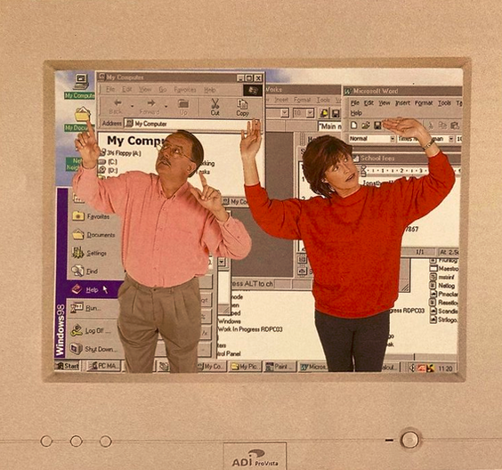

NAVIGUER LE LONG D'UN PANORAMA
entre le ruban et le cadre
1 / 41
1 / 41
PANO1 : HAZANAVICIUS Michel, OSS117 : Le Caire, Nid d'espions, 2005.
2 / 41
PANO-0 : « Le panorama de la Samaritaine », double page extraite de LATOUR, Bruno et HERMANT, Émilie, Paris : Ville Invisible, 2009, Les Empêcheurs de penser en rond / Seuil.
3 / 41
PANO2 : Tapisserie de Bayeux, 1077, 70m. Épopée de Guillaume, duc de Normandie, devenu roi d’Angleterre en 1066, à l’issue de la bataille d’Hastings. Musée de Bayeux.
4 / 41
PANO3 : Codex Zouche-Nuttall, Mexique central, découvert au couvent de San Marco à Florence en 1854, British Museum. Manuscrit en peau animale, composé de 47 feuilles, pliées en accordéon. Les images se « lisent » en boustrophédon, des lignes rouges servant de repères. Le codex est peint au recto et au verso. Les images du recto racontent sur plusieurs siècles une histoire générale mixtèque depuis le premier couple mythique issu de deux arbres à un endroit appelé Apoala. Le verso est consacré à la généalogie, aux alliances et aux conquêtes d’un célèbre seigneur mixtèque appelé « Huit-Cerf Griffe d’Ocelot » de Tilantongo, une petite cité mixtèque de l’Oaxaca, au xie siècle.
5 / 41
PANO4 : Every Building on the Sunset Strip, Edward Ruscha, 1966, 8 mètres de long, documente tous les bâtiments du Sunset boulevard à Los Angeles. Edward Ruscha a photographié les deux côtés de la rue en équipant sa voiture d’un appareil photo motorisé.
6 / 41
PANO4-2 : Leporello de Laurent Dequick Grand Canal, 2019, et Toits de Paris, 2021, Éditions du Chêne, 18m de long.
7 / 41
PANO5 : (Sanjo Scroll), Rouleau illustré du Dit de Heiji (rouleau Sanjō), fin du XIIIème siècle, Museum of Fine Arts Boston.
Emaki Ippen Shōnin Eden, Biographie illustrée du moine bouddhiste Ippen, En’i, 1299, 37.8 x 802 cm, Tokyo National Museum.
Emaki Ippen Shōnin Eden, Biographie illustrée du moine bouddhiste Ippen, En’i, 1299, 37.8 x 802 cm, Tokyo National Museum.
8 / 41
PANO6 : Frederick Wiseman, Cinéaste, portrait photographique par Hervé Bruhat / Chambre noire.
9 / 41
PANO7 : Transparents de Carmontelle, vers 1780, Louis Carrogis dit Carmontelle, entre 25 m et 55 m. “Carmontelle actionne lui-même les manivelles qui permettent de dérouler les mètres de transparents où sont peintes les différentes scènes ; il donne vie aux personnages par des changements de voix et raconte son histoire par un défilement sans temps morts.“
10 / 41
PANO7-2 : Sergei Eisenstein, sequences diagrams for Alexander Nevsky and Battleship Potëmkin, Diagrammes des séquences pour les films Alexander Nevsky et Battleship Potëmkin, 1925.
11 / 41
CA20 : Capture d’écran de la table de montage (timeline) avec ses canaux superposés dans le logiciel Final Cut Pro 10.5, 2019.
12 / 41
PANO8 : Logiciel Lignes de Temps, 2008, Institut de recherche et d’innovation, Centre Georges Pompidou.
13 / 41
PANO9 : videogame traversal (temporal slice : close-up) : Kingdom Hearts, William Huber (with Lev Manovich), 2009. (haut) “The data are the game play sessions of the video games Kingdom Hearts (2002, Square Co., Ltd.) and Kingdom Hearts II (2005, Square-Enix, Inc.) Each game was played from the beginning to the end over a number of sessions.
The video captured from all game sessions of each game were assembled into a singe sequence. The sequences were sampled at 6 frames per second. This resulted in 225,000 frames for Kingdom Hearts and 133,000 frames for Kingdom Hearts II. The visualizations use only every 10th frame from the complete frame sets.” (bas) “A segment from a visualization of the sequence of gameplay sessions ; this segment represents 2.34 hours of gameplay sampled at 1 frames every 2 seconds (30 per minute). Each vertical line corresponds to one frame, for a total of 4227 frames.”
The video captured from all game sessions of each game were assembled into a singe sequence. The sequences were sampled at 6 frames per second. This resulted in 225,000 frames for Kingdom Hearts and 133,000 frames for Kingdom Hearts II. The visualizations use only every 10th frame from the complete frame sets.” (bas) “A segment from a visualization of the sequence of gameplay sessions ; this segment represents 2.34 hours of gameplay sampled at 1 frames every 2 seconds (30 per minute). Each vertical line corresponds to one frame, for a total of 4227 frames.”
14 / 41

PANO10 : Capture d’écran de la Timeline sous une vidéo de l’interface Youtube, 2022.
15 / 41
PANO11 : Rouleau de la Torah, Saint-Pétersbourg, 1828. Parchemin, 15,3 x 1385 cm, BnF, Manuscrits, hébreu 1426 © Bibliothèque nationale de France
16 / 41
PANO12 : Volumen Cronica cronicarum, Paris, François Regnault et Jacques Ferrebouc pour Jean I Petit, 1521 - Vélin 55 x 531 cm. François Regnault ; Jacques Ferrebouc ; Jean Ie Petit, Paris, 1521. BnF, Réserve des livres rares, Rés. Vélins-15 et 16 © Bibliothèque nationale de France
17 / 41
PANO12-2 : On the Road, Jack Kerouac, manuscrit original écrit entre le 2 et le 22 avril 1951, 370 pages dactylographiées et reliées ensemble en un paragraphe continu, sans retours à la ligne, 36m de long, Musée des Lettres et des Manuscrits, Paris.
“I slid it into the typewriter and never hit the paragraph key... I laid it out on the floor and it looked like a road.” (“J’ai mis [le rouleau de papier] dans la machine à écrire, et je n’ai jamais utilisé la touche de retours à la ligne… je l’ai déroulé sur le sol, on aurait dit une route”) Jack Kerouac
© BRITISH LIBRARY / ESTATE OF ANTHONY G. SAMPATACACUS AND THE ESTATE OF JAN KEROUAC / CHRISTIE’S
“I slid it into the typewriter and never hit the paragraph key... I laid it out on the floor and it looked like a road.” (“J’ai mis [le rouleau de papier] dans la machine à écrire, et je n’ai jamais utilisé la touche de retours à la ligne… je l’ai déroulé sur le sol, on aurait dit une route”) Jack Kerouac
© BRITISH LIBRARY / ESTATE OF ANTHONY G. SAMPATACACUS AND THE ESTATE OF JAN KEROUAC / CHRISTIE’S
18 / 41
PANO13 : Représentation de la machine de Turing, illustration de wvbailey pour Wikipédia, 2006.
19 / 41
PANO14 : Infinite scroll, 2016, Makeagif.com.
20 / 41
PANO14-2 : An imaginative drawing to illustrate the scrolling process,
« This illustration from an early word processing manual sought to reassure anxious authors that their prose was still there, even after it had scrolled off the edge of the screen. » Illustration extraite du manuel de PerfectWriter, Perfect Software, Inc,1983.
« This illustration from an early word processing manual sought to reassure anxious authors that their prose was still there, even after it had scrolled off the edge of the screen. » Illustration extraite du manuel de PerfectWriter, Perfect Software, Inc,1983.
21 / 41
PANO15 : Une utilisation détournée de la fonction panorama des smartphones dévoile la technique de stitching à l’œuvre. En 2019, j’ai l’opportunité de voyager en Thaïlande. De nombreuses heures de bus, train, tuk tuk s’enchaînent : j’observe les paysages qui défilent, le nez collé à la vitre, tout comme mon portable que je trombe en créant des “panoramas” non pas par mouvement de rotation, mais de translation du transport, captant les visions disparaissantes du chemin. Le logiciel de stitching, perturbé, dévoile alors les bords des images qu’il tente comme il peut d’assembler les images.
22 / 41
PANO16 : Johan Christian Dahl, Vue depuis Bastei, 1819, huile sur toile, Drammens Museum © Drammens Museum
23 / 41
PANO16-2 : Illustration extraite de DRULHE Louise, Atlas critique d’Internet, Spatialisation d’un objet complexe en vue d’en comprendre les enjeux socio-politiques, 2015, chapitre “La pente du Web”. [En ligne] « La Toile est pareille à une ville inconnue, qui ne se révèle que par l’incursion, comme à la lueur d’une bougie, qui ne fait exister l’espace que lorsqu’il est immédiat. » CELLARD Loup, « Circumnavigations, l’imaginaire du voyage dans l’expérience internet », article du média en ligne strabic.fr, 10 décembre 2011. [ en ligne ]
24 / 41

BEL1-20 : Vue aériennes de la ville de Monteriggioni en Italie, et de l’hyperville d’Orlando en Floride.
25 / 41

PANO17-2 : ,Le panorama de Rome (1820) tel qu’il figurait dans la notice explicative, d’après BAPST Germain, Essai sur l’histoire des panoramas et des dioramas, Paris, 1891. Illustration extraite de LAMBOLEY Claude, « Petite Histoire des Panoramas ou la fascination de l’illusion”, in Académie des Sciences et Lettres de Montpellier, Bulletin n°38, pp. 37-52 (édition 2008)
26 / 41
PANO17 : Avoir une image de satellite ne suffit pas, et Google l’a bien compris : avec ses Google Cars qui captent des séries de panoramas à 360°, il peut donner l’illusion d’avancer ou de reculer dans une rue, presque comme si on y étais avec un champ de vision panoramique. Capture d’écran de l’interface de Google Maps avec l’option Google Street View pour le 48 rue Saint-Sabin à Paris, 2022.
27 / 41
PANO18 : Jan Dibbets, Panorama Dutch Mountain 12 x 15° Sea II A, 1971, © ARS, NY and DACS, London 2022 ; Big Comet 3°-60° Sky-Land-Sky, 1973 ; Negative Mountain Sea, 1972 ; Mer-Horizon 0-135°, 1971.
28 / 41
PANO19 : Jan Dibbets, Saenredam-Zadkine V, Saenredam-Zadkine II et VII, 2003, Photographie couleur et crayon sur papier © Tom Haartsen.
29 / 41
PANO20 : The three critical views of network visualization, illustration extraite de LIMA Manuel, Visual complexity : mapping patterns of information, 2011, New York, Princeton Architectural Press, p. 91.
30 / 41
PANO21 : Illustration extraite de DRULHE Louise, Atlas critique d’Internet, Spatialisation d’un objet complexe en vue d’en comprendre les enjeux socio-politiques, 2015, chapitre “Un espace peuplé”. [En ligne] « La Toile est pareille à une ville inconnue, qui ne se révèle que par l’incursion, comme à la lueur d’une bougie, qui ne fait exister l’espace que lorsqu’il est immédiat. » CELLARD Loup, « Circumnavigations, l’imaginaire du voyage dans l’expérience internet », article du média en ligne strabic.fr, 10 décembre 2011. [ en ligne ]
31 / 41

32 / 41
PANO22-2 : Illustration extraite du manuel How to do just about anything on a computer, vers 2000. Image citée dans un tweet de Loup Cellard le 19 janvier 2022.
33 / 41
PANO22 : Illustration extraite de DRULHE Louise, Atlas critique d’Internet, Spatialisation d’un objet complexe en vue d’en comprendre les enjeux socio-politiques, 2015, chapitre “Un espace cadré”. [En ligne]
34 / 41

RES18 : « Comme le lien hypertexte, un raccourci d’espace-temps se trouve dans les portes qui savent mener dans des lieux très éloignés »
NOLFI Georges, The adjustment bureau, 2011, film produit par Electric Shepherd Productions et Media Rights Capital.
NOLFI Georges, The adjustment bureau, 2011, film produit par Electric Shepherd Productions et Media Rights Capital.
35 / 41
PANO23 : Le pont de l’Europe, Gustave Caillebotte, 1876.
36 / 41
PANO24 : Panorama de Robert Fulton, Brevet d’invention, 1799 © Archives INPI-2
37 / 41
PANO25 : Jeff Wall, Restoration, 1993 © Jeff Wall. Panorama Bourbaki, peinture cylindrique de 10 mètres de haut sur 35,6 mètres de diamètre (112 mètres de développement), conservée dans un musée consacré à Lucerne en Suisse, Édouard Castres. Il représente avec réalisme un épisode de la guerre franco-prussienne de 1870-1871 : la débâcle de l’armée Bourbaki de janvier 1871.
38 / 41

RES16 : Succession de recommandations de vidéos par l’algorithme de youtube à partir de la page d’accueil (en bleu). Comme on le voit dans l’angle supérieur gauche, parfois les recommandations bouclent et se répètent. Graphique de type “Trace” généré par l’algorithme , extrait de BENQUÉ David, , 2018-2020.
39 / 41
PANO25 : Personalized Galaxies of information : Interface d’exploration de mots-clés extraits et mis en relation par un algorithme à partir de titres d’articles de presse. Plusieurs couches représentent les différentes granularités de l’information, des mots-clés jusqu’aux détails des articles.© MIT Media Lab (Earl Rennison) Extrait de MAUDET Nolwenn , « Muriel Cooper : Informations Landscapes » article de la revue Back Office, vol. 1, février 2017, B42 et Fork Editions. [ en ligne ]
40 / 41
PANO26 : Filtering the News est un système cubique dont chaque face présente un point de vue différent sur des articles de presse : leur titre, leur source, leur longueur et l’agence de presse qui les a publiées. © MIT Media Lab (Yin Yin Wong) Extrait de MAUDET Nolwenn , « Muriel Cooper : Informations Landscapes » article de la revue Back Office, vol. 1, février 2017, B42 et Fork Editions. [ en ligne ]
41 / 41

PANO27 : Typography in Space : espace typographique tridimensionnel dans laquelle le lecteur peut naviguer librement. © MIT Media Lab (M. Cooper, D. Small, S. Ishizaki. Extrait de MAUDET Nolwenn , « Muriel Cooper : Informations Landscapes » article de la revue Back Office, vol. 1, février 2017, B42 et Fork Editions. [ en ligne ]
0
/ 20
Prélude
Les débuts de ce mémoire, au printemps 2021, furent rythmés alternativement de deux cadences pour le moins opposées. Tantôt en mouvement constant, dans des allers-retours répétés entre Grenoble et Paris, où le plus clair de mon temps semblait passé aux côtés du hublot du TGV. Tantôt rattrapée par des consignes sanitaires d’isolement et autres confinement, mon horizon quotidien était encadré par l’étroite et haute fenêtre à droite de mon bureau. Bien qu’au fond, dans les deux cas, je restais exactement dans la même position, assise face à mon ordinateur, le regard alternant entre la fenêtre de l’écran et celle du paysage, les deux situations me semblaient drastiquement contraire.
Parfois, frustrée par l’immobilité du paysage de la cour de mon immeuble, je penchais la tête par la fenêtre, pour tenter de voir d’étendre un peu la vue, faire défiler la perspective, dépasser la fixité de l’encadrement. Parfois, impuissante face à l’inexorable défilement du paysage ferroviaire, j’aurais souhaité fixer plus d’un instant la vue fugace d’une vallée, pouvoir y revenir et scruter ses détails qui toujours m’échappaient sans pouvoir les rattraper après le passage du train.
Quelle drôle de dynamique, alors qu’au même moment, dans les 13,3 pouces de mon écran, défilaient ou stagnaient des kilomètres de textes. Je finissais par me demander si je n’étais pas déjà à la recherche d’un entre deux entre pause et défilement. Comme si, en toutes situations, je cherchais comment circuler dans un panorama.
Comme le dit Jean Dujardin dans une scène devenue un meme classique, tout le monde aime les panoramas
. HAZANAVICIUS Michel, OSS117 : Le Caire, Nid d'espions, 2005.
Cependant, l’implantation du panorama dans l’inconscient collectif est bien qu’un simple goût. Je crois que le panorama incarne une logique spatiale profondément ancrée dans nos manières de construire les récits, de structurer les expérience de l’espace-temps, qui se manifeste depuis les documents antiques et jusqu’au média numériques contemporains.
Panorama : succession d’images
qui raconte une histoire
PANORAMA : du grec “pan” – “horama” = vision de l’ensemble, de tout.
Vaste paysage que l’on découvre d’une hauteur, que l’on peut contempler de tous côtés
Vaste paysage que l’on découvre d’une hauteur, que l’on peut contempler de tous côtés
Panoramisme : champ de visibilité dont dispose le conducteur d’un véhicule
Construction circulaire qui se déploie horizontalement à 360° autour du spectateur
-
CNRTL,
Panorama
, article du Trésor de la Langue Française Informatisé. [ en ligne ] - Ibidem.
- Ibid., d’après le Robert, Supplément, 1970.
-
CNRTL,
Panorama
, article du Trésor de la Langue Française Informatisé. [ en ligne ] -
HAZANAVICIUS Michel, OSS117 : Le Caire, Nid d'espions, 2005. Cette affirmation est d’ailleurs devenue le titre d’une exposition du MUCEM en 2015 dont le catalogue m’a richement inspiré : MUCEM, exposition
J'aime les panoramas
, novembre 2016 à février 2016, commissariat Laurence Madeline et Jean-Roch Bouiller.
la ligne de l’histoire
Panorama : succession d’images
qui raconte une histoire
2
/ 20
Le panorama et son format tout étiré en longueur « Le panorama de la Samaritaine », double page extraite de LATOUR, Bruno et HERMANT, Émilie, « Paris : Ville Invisible », 2009, Les Empêcheurs de penser en rond / Seuil. sont le support parfait pour illustrer ce principe cognitif fondamental qu’est la linéarité. Ce format long et fin fait succéder des scènes qu’il assemble, dans un sens ou dans un autre, en leur procurant ordre et liaison : dans les fresques grecques ou les tapisseries moyenâgeuse « Tapisserie de Bayeux », 1077, 70m. Épopée de Guillaume, duc de Normandie, devenu roi d’Angleterre en 1066, à l’issue de la bataille d’Hastings. Musée de Bayeux. que l’on doit longer pour observer l’histoire évoluer ; dans les
Codex mésoaméricains « Codex Zouche-Nuttall », Mexique central, découvert au couvent de San Marco à Florence en 1854, British Museum. Manuscrit en peau animale, composé de 47 feuilles, pliées en accordéon. Les images se « lisent » en boustrophédon, des lignes rouges servant de repères. Le codex est peint au recto et au verso. Les images du recto racontent sur plusieurs siècles une histoire générale mixtèque depuis le premier couple mythique issu de deux arbres à un endroit appelé Apoala. Le verso est consacré à la généalogie, aux alliances et aux conquêtes d’un célèbre seigneur mixtèque appelé « Huit-Cerf Griffe d’Ocelot » de Tilantongo, une petite cité mixtèque de l’Oaxaca, au xie siècle. ou les
Leporello « Every Building on the Sunset Strip », Edward Ruscha, 1966, 8 mètres de long, documente tous les bâtiments du Sunset boulevard à Los Angeles. Edward Ruscha a photographié les deux côtés de la rue en équipant sa voiture d’un appareil photo motorisé. que l’on déplie section par section pour voir comment chaque portion prédéfinie est en continuité avec la suivante ;
dans les Emakis japonais « (Sanjo Scroll), Rouleau illustré du Dit de Heiji (rouleau Sanjō), » fin du XIIIème siècle, Museum of Fine Arts Boston.
Emaki « Ippen Shōnin Eden, Biographie illustrée du moine bouddhiste Ippen », En’i, 1299, 37.8 x 802 cm, Tokyo National Museum. que l’on enroule et déroule simultanément pour dévoiler divers extraits d’un même paysage.
C’est presque ce même principe qui est la fondation d’un de nos plus grands divertissements actuels, le cinéma. Comment ne pas voir, dans les kilomètres de pellicules « Frederick Wiseman, Cinéaste », portrait photographique par Hervé Bruhat / Chambre noire. qui ont fait se succéder en défilant des centaines d’images à l’écran, une réincarnation du geste du déroulement des Emakis, ou plus proche encore, des Transparents de Carmontelle « Transparents de Carmontelle » vers 1780, Louis Carrogis dit Carmontelle, entre 25 m et 55 m. “Carmontelle actionne lui-même les manivelles qui permettent de dérouler les mètres de transparents où sont peintes les différentes scènes ; il donne vie aux personnages par des changements de voix et raconte son histoire par un défilement sans temps morts." ? À la différence bien sûr que le principe du film consiste à faire oublier au spectateur la grande bande qui défile pour créer la temporalité du film, et qu’il n’est pas prévu qu’en plein milieu de la projection, on se détourne du détail d’une scène pour chercher à avoir une vue d’ensemble de la bande en regardant la totalité de la pellicule. Sergei Eisenstein, « sequences diagrams for Alexander Nevsky and Battleship Potëmkin », Diagrammes des séquences pour les films « Alexander Nevsky et Battleship Potëmkin, »1925. Mais ce médium ne s’est pas longtemps écarté du panorama, puisqu’aujourd’hui, si la pellicule a presque disparu,
les longues et fines timelines Capture d’écran de la table de montage (timeline) avec ses canaux superposés dans le logiciel Final Cut Pro 10.5, 2019. (ou Lignes de temps Logiciel Lignes de Temps, 2008, Institut de recherche et d’innovation, Centre Georges Pompidou. ) sont omniprésentes, si ce n’est dans les logiciels de montage, au moins sous toutes les vidéos que nous regardons. Capture d’écran de la Timeline sous une vidéo de l’interface Youtube, 2022. Toujours cette ligne sur laquelle se succède des scènes, qui nous donne une vision d’ensemble d’une histoire. Videogame traversal (temporal slice : close-up) : Kingdom Hearts, William Huber (with Lev Manovich), 2009. (haut) “The data are the game play sessions of the video games Kingdom Hearts (2002, Square Co., Ltd.) and Kingdom Hearts II (2005, Square-Enix, Inc.) Each game was played from the beginning to the end over a number of sessions.
The video captured from all game sessions of each game were assembled into a singe sequence. The sequences were sampled at 6 frames per second. This resulted in 225,000 frames for Kingdom Hearts and 133,000 frames for Kingdom Hearts II. The visualizations use only every 10th frame from the complete frame sets.” (bas) “A segment from a visualization of the sequence of gameplay sessions ; this segment represents 2.34 hours of gameplay sampled at 1 frames every 2 seconds (30 per minute). Each vertical line corresponds to one frame, for a total of 4227 frames.”
Cette même linéarité a infusé même en dehors du secteur de l’image, car si nous n’utilisons plus de Volumen « Volumen Cronica cronicarum » François Regnault et Jacques Ferrebouc pour Jean I Petit, 1521 - Vélin 55 x 531 cm. François Regnault ; Jacques Ferrebouc ; Jean Ie Petit, Paris, 1521. BnF, Réserve des livres rares, Rés. Vélins-15 et 16 © Bibliothèque nationale de France « Rouleau de la Torah, » Saint-Pétersbourg, 1828. Parchemin, 15,3 x 1385 cm, BnF, Manuscrits, hébreu 1426 © Bibliothèque nationale de France, les lignes de l’écriture sont comme d’immenses panoramas littéraires, dont la succession de mots et de pages raconte une histoire. « On the Road », Jack Kerouac, manuscrit original écrit entre le 2 et le 22 avril 1951, 370 pages dactylographiées et reliées ensemble en un paragraphe continu, sans retours à la ligne, 36m de long, Musée des Lettres et des Manuscrits, Paris. “I slid it into the typewriter and never hit the paragraph key... I laid it out on the floor and it looked like a road.” (“J’ai mis [le rouleau de papier] dans la machine à écrire, et je n’ai jamais utilisé la touche de retours à la ligne… je l’ai déroulé sur le sol, on aurait dit une route”) Jack Kerouac © BRITISH LIBRARY / ESTATE OF ANTHONY G. SAMPATACACUS AND THE ESTATE OF JAN KEROUAC / CHRISTIE’S Et même au-delà des lettres, au racines de l’informatique on peut aussi déceler le ruban d’un immense panorama de chiffres de la machine à calculer théorique de Turing. Représentation de la machine de Turing, illustration de wvbailey pour Wikipédia, 2006. Cette logique à la fois de discrétion et de continuité, base technique de l’informatique, se fait oublier dans l’expérience du numérique, mais l’héritage du panorama y est toujours bien présent. D’abord parce que le digital est resté profondément textuel, fondé sur la linéarité littéraire, mais surtout car la structure spatiale des interfaces repose en partie sur des mécanismes linéaires déjà présents sur les panoramas. Ainsi on scroll (de l’anglais scroll : rouleau, l’anglicisme scroller correspond donc à l’idée de faire défiler) à travers les pages « Infinite scroll », 2016, Makeagif.com. ; on suit des “fils d’actualités et de recommandations, ou même de discussions, comme les fameux Threads de Twitter ( de l’anglais thread : fil). « An imaginative drawing to illustrate the scrolling process », « This illustration from an early word processing manual sought to reassure anxious authors that their prose was still there, even after it had scrolled off the edge of the screen. » Illustration extraite du manuel de « PerfectWriter », Perfect Software, Inc,1983.
succession d’images
fusion de données : utilisation de données provenant de différentes sources pour créer de nouvelles connaissances qui ne sont explicitement contenues dans aucune d’entre elles.
La combinaison de sources médiatiques distinctes peut également donner des significations supplémentaires à chacune des sources. Considérez la technique de l’assemblage automatique (“stitching”) d’un certain nombre de photos distinctes en un seul panorama, disponible dans la plupart des appareils photo numériques. Une utilisation détournée de la fonction « panorama » des smartphones dévoile la technique de « stitching » à l’œuvre. En 2019, j’ai l’opportunité de voyager en Thaïlande. De nombreuses heures de bus, train, tuk tuk s’enchaînent : j’observe les paysages qui défilent, le nez collé à la vitre, tout comme mon portable que je trombe en créant des “panoramas” non pas par mouvement de rotation, mais de translation du transport, captant les visions disparaissantes du chemin. Le logiciel de stitching, perturbé, dévoile alors les bords des images qu’il tente comme il peut d’assembler les images. Strictement parlant, les algorithmes sous-jacents n’ajoutent aucune nouvelle information à chacune des images (c’est-à-dire que leurs pixels ne sont pas modifiés). Mais puisque chaque image fait maintenant partie du panorama plus large, sa signification pour un observateur humain change. Leporello. Ces images-livres au format très long se déplient et démultiplient l’espace dans une représentation unique, étirée. La lecture est à la fois fragmentée et continue, elle invite au déplacement et à la manipulation.
Leporello de Laurent Dequick « Grand Canal », 2019, et « Toits de Paris », 2021, Éditions du Chêne, 18m de long.
narration en itinéraire
En grec, la narration est appelée “diagêsis” : elle établit un itinéraire (“elle guide”) et elle passe au travers (elle “transgresse”).
Contrairement à la littérature moderne, le théâtre, et le cinéma qui sont construits autour des tensions psychologiques entre les personnages et le mouvement dans l’espace psychologique, [...] [dans] les anciennes formes de récit l’intrigue est guidée par le mouvement spatial du héros principal, parcourant des contrées lointaines pour sauver la princesse, pour trouver le trésor, pour vaincre le Dragon, etc.
Dans ces récits, c’est parce que le personnage traverse différents espaces qu’il évolue psychologiquement et construit son histoire
tels sont les récits au sens grec ancien du terme . La fresque grecque est grande, fixe car intégrée au mur, mais elle s’observe en mouvement.
Le panorama a cette capacité à concentrer, en une image unique, une vision du monde et induit un déroulé narratif, que l’on retrouve dans les parchemins asiatiques comme dans les films au cinéma.
itinéraire temporel linéaire
les conventions que nous utilisons pour représenter le temps qui passe sont inextricablement entremêlées à une image post-dix-neuviémiste du temps sous forme de ligne séquentielle…
Le logiciel Lignes de temps met à profit les possibilités d’analyse et de synthèse offertes par le support numérique. Inspirées par les “timelines” ordinairement utilisées sur les bancs de montage numérique, Capture d’écran de la table de montage (timeline) avec ses canaux superposés dans le logiciel Final Cut Pro 10.5, 2019. Lignes de temps propose une représentation graphique d’un film, révélant d’emblée, et in extenso, son découpage. Lignes de temps offre en cela un accès inédit au film, en substituant à la logique du défilement contraint qui constitue l’expérience de tout spectateur de cinéma, et pour les besoins de l’analyse, la “cartographie” d’un objet temporel.
Logiciel Lignes de Temps, 2008, Institut de recherche et d’innovation, Centre Georges Pompidou.
linéarité littéraire
Les textes littéraires sont toujours planaires (et même généralement linéaires), c’est-à-dire disposés sur une feuille de papier.
« On the Road », Jack Kerouac, manuscrit original écrit entre le 2 et le 22 avril 1951, 370 pages dactylographiées et reliées ensemble en un paragraphe continu, sans retours à la ligne, 36m de long, Musée des Lettres et des Manuscrits, Paris.
“I slid it into the typewriter and never hit the paragraph key... I laid it out on the floor and it looked like a road.” (“J’ai mis [le rouleau de papier] dans la machine à écrire, et je n’ai jamais utilisé la touche de retours à la ligne… je l’ai déroulé sur le sol, on aurait dit une route”) Jack Kerouac
© BRITISH LIBRARY / ESTATE OF ANTHONY G. SAMPATACACUS AND THE ESTATE OF JAN KEROUAC / CHRISTIE’S
Le texte, quel que soit son degré d’organisation intellectuelle, tient ensemble par le simple fait qu’il est linéaire [...]. Le texte linéaire remplace parfois la véritable cohérence intellectuelle par la succession qui en tient lieu avantageusement.
Impensable en dehors d’une inscription temporelle, toute littérature a massivement à faire avec la linéarité. [...] Et l’écriture des textes littéraires est largement contrainte par cette matérialité. Même les recueils poétiques, qui sembleraient pourtant pouvoir échapper à cette contrainte d’ordre, dès qu’imprimés dans un ouvrage quelconque se trouvent soumis à cette loi générale.
« Volumen Cronica cronicarum » François Regnault et Jacques Ferrebouc pour Jean I Petit, 1521 - Vélin 55 x 531 cm. François Regnault ; Jacques Ferrebouc ; Jean Ie Petit, Paris, 1521. BnF, Réserve des livres rares, Rés. Vélins-15 et 16 © Bibliothèque nationale de France
logique linéaire
La “machine universelle” de Turing joue comme modèle de programme informatique, un modèle de papier ramené à l’infini déroulé d’un ruban inscriptible. Séquentielle et linéaire, elle ne peut pas ne pas calculer.
Représentation de la machine de Turing, illustration de wvbailey pour Wikipédia, 2006.
Si on réfléchit dans cette direction, on pourrait alors considérer le ruban linéaire de la machine décrite par Turing en 1935 ; machine “de papier” disait-il parce qu’il s’agit d’une machine abstraite, mathématique qui n’a pas, dans un premier temps, de réalisation physique ; comme la réduction extrême de l’espace à une interface graphique à une seule dimension, celle du papier sur lequel on inscrit des marques : il y a une case vide ou une case avec un trait — c’est tout. On ne peut pas faire plus simple !
Représentation de la machine de Turing, illustration de wvbailey pour Wikipédia, 2006.
scroll
Scroller : (de l’anglais “scroll” : parchemin) Scroller consiste à faire défiler un affichage numérique, verticalement et/ou horizontalement.
« Infinite scroll », 2016, Makeagif.com.
Si l’on prend les différents niveaux d’interfaces Web, on constate que peu d’entre elles laissent vraiment l’internaute organiser sa navigation. La navigation dans la page se fait principalement sur un axe vertical. En effet, la plupart des sites Web sont responsive dans la largeur, c’est-à-dire qu’ils adaptent automatiquement leur largeur à celle de la fenêtre. En fonction de celle-ci, la page sera donc plus ou moins longue. Cette convention facilite la navigation puisque le visiteur n’a qu’à scroller que dans une direction. Mais ce déplacement ne donne au visiteur que le choix de sa vitesse de lecture.
-
CNRTL,
Panorama
, article du Trésor de la Langue Française Informatisé. [ en ligne ] - MANOVITCH Lev, Archeology of a computer screen, 1995, article disponible sur son site Web. [ en ligne ]
-
Le leporello, également appelé livre accordéon, ou encore livre frise, est un livre qui se déplie comme un accordéon grâce à une technique particulière de pliage et de collage de ses pages. [...] Le mot fait allusion à Leporello, valet de Don Juan, qui présente à Donna Elvira la longue liste des conquêtes de son maître, pliée en accordéon, dans le premier acte de l’opéra Don Giovanni de Mozart (sur l’air Madamina, il catalogo è questo).
WIKIPÉDIA,Leporello
, Français. [ en ligne ] -
noté également emakimono ou e-maki, littéralement en japonais “peinture”, “rouleau”. Rouleaux illustrés et/ou calligraphiés de l’époque de Nara au VIIIe siècle, sur papier ou soie de parois plusieurs mètres. Bien sûr beaucoup d’autres ouvrages japonais, choinois au coréens correspondent au même format, mais malgré mes faibles connaissances dans ce domaine, j’aime dans les emakis la dimension narrative très forte, qui déroule une histoire de droite à gauche. Souvent en plus des personnages les paysages s’enchaînent sans rupture, ce qui n’est pas le cas dans la tapisserie de Bayeux par exemple, où seule compte l’action. WIKIPÉDIA,
Emaki
, Français. [ en ligne ] - Logiciel Lignes de Temps, 2008, Institut de recherche et d’innovation, Centre Georges Pompidou.
-
Le volumen (mot latin signifiant
WIKIPÉDIA,chose enroulée
) est un livre à base de feuilles de papyrus collées les unes aux autres et qui s’enroule sur lui-même. Il a été créé en Égypte vers 3000 av. J.-C. Le texte est rédigé en colonnes parallèles assez étroites. C’est le support du texte par excellence durant les trente siècles précédant notre ère, d’abord en Égypte, puis dans tout le monde méditerranéen. Il sera ensuite progressivement remplacé par le codex.Volumen
, Français. [ en ligne ] -
Voir Clément Jean,
Du texte à l’hypertexte : vers une épistémologie de la discursivité hypertextuelle
, in Acheronta, n°2, décembre 1995. -
LASSÈGUE Jean,
Des grilles et des rubans : Les machines formelles d’Alan Turing, avril 2018, Entretien réalisé par Kévin Donnot et Anthony Masure à Paris, le 11 juillet 2017 pour la revue Backoffice N°2, édition B42. [ en ligne ]
- séquençage en unités distinctes.
-
LAROUSSE,
Scroll
, dictionnaire anglais-français. [ en ligne ] -
PERRY Anouck,
Derrière le Tweet
, série d’interviews en podcast sur le média en ligne Binge, 2018. -
LAROUSSE,
Thread
, dictionnaire anglais-français. [ en ligne ] - MANOVICH Lev, Software takes command [le logiciel prends le pouvoir], 2013, New York, Bloomsbury Academic, “Conclusion”, p. 339. Traduction depuis l’anglais par l’autrice. [ en ligne ]
-
Le leporello, également appelé livre accordéon, ou encore livre frise, est un livre qui se déplie comme un accordéon grâce à une technique particulière de pliage et de collage de ses pages. [...] Le mot fait allusion à Leporello, valet de Don Juan, qui présente à Donna Elvira la longue liste des conquêtes de son maître, pliée en accordéon, dans le premier acte de l’opéra Don Giovanni de Mozart (sur l’air Madamina, il catalogo è questo).
WIKIPÉDIA,Leporello
, Français. [ en ligne ] -
MUCEM, Dossier pédagogique de l’exposition exposition
J’aime les panoramas
, novembre 2016 à février 2016, rédaction du livret par Sophie Valentin, commissariat de Laurence Madeline et Jean-Roch Bouiller, p. 15. [ en ligne ] -
CERTEAU Michel de, The Practice of Everyday Life, 1984, University of California Press, p. 129. Traduit du français par Steven Rendall. Cité par MANOVICH Lev ,
Navigable Space
, 1998, p. 3. Transcription et traduction depuis l’anglais par l’autrice. [ en ligne ]. Une version de cet article traduite existe également dans l’ouvrage postérieur Le langage des nouveaux médias, au chapitre 5. -
MANOVICH Lev ,
Navigable Space
, 1998, p. 3. Transcription et traduction depuis l’anglais par l’autrice. [ en ligne ] Une version de cet article traduite existe également dans l’ouvrage postérieur Le langage des nouveaux médias, au chapitre 5. - Ibidem.
- MOUREAUX-NÉRY Caroline, World Wide Web, plongée dans les logiques de navigation Web, 2020, mémoire de fin d’étude sous la direction de Loup Cellard, ENSCI - Les Ateliers, p. 71. Caroline paraphrase ici MANOVITCH Lev, Archeology of a computer screen, 1995, article disponible sur son site Web, p. 26. [ en ligne ]
-
MUCEM, site de l’exposition exposition
J’aime les panoramas
, novembre 2016 à février 2016, commissariat Laurence Madeline et Jean-Roch Bouiller. -
HALL Peter,
Bulles lignes et fils
, article de la revue en ligne Backoffice n°2, Penser, classer, représenter, avril 2018 [2011], édition B42. Traduit de l’anglais par Marie-Mathilde Bortolotti. Hall prend appui sur ROSENBERG Daniel, and GRAFTON Anthony, Cartographies of Time : A History of the Timeline, 2010, New York, Princeton Architectural Press. -
iRi,
Tutoriel Lignes de temps
, décembre 2009, [ En ligne]. A propos du logiciel Lignes de Temps, 2008, Institut de recherche et d’innovation, Centre Georges Pompidou. Cité par MASURE Anthony, Le design des programmes, des façons de faire du numérique, 2014, Thèse dirigée par M. Pierre-Damien Huyghe, Université Paris 1 Panthéon-Sorbonne, ufr 04, École doctorale d’arts plastiques et sciences de l’art, p. 275. [ En ligne ] -
LIONNAIS François Le, in Oulipo, La littérature potentielle. Créations, Re-créations, Récréations. Paris, Gallimard, 1973. p. 285. Cité par ERTZSCHEID Olivier,
L’hypertexte : haut lieu de l’intertexte
, La Revue des Ressources, jeudi 31 octobre 2002 [ en ligne ] -
LAUFER Roger,
L’écriture hypertextuelle, pratique et théorie. À partir d’une recherche sur Rigodon de Céline
, in Littérature, n°96,Informatique et littérature
, décembre 1994. Cité par Clément Jean,Du texte à l’hypertexte : vers une épistémologie de la discursivité hypertextuelle
, in Acheronta, n°2, décembre 1995. [ en ligne ] -
BALPE Jean-Pierre,
Dispositifs
, 27 novembre 1997. [en ligne] Cité par ERTZSCHEID Olivier,L’hypertexte : haut lieu de l’intertexte
, La Revue des Ressources, jeudi 31 octobre 2002 [ en ligne ] -
LASSÈGUE Jean,
Des grilles et des rubans : Les machines formelles d’Alan Turing, avril 2018, Entretien réalisé par Kévin Donnot et Anthony Masure à Paris, le 11 juillet 2017 pour la revue Backoffice N°2, édition B42. [ en ligne ]
-
TURING Alan,
Lecture on the Automatic Computing Engine
, exposé à la London Mathematical Society, 20 février 1947, reproduit dans : B. Jack Copeland (dir.), The Essential Turing-Seminal Writings in Computing, Logic, Philosophy, Artificial Intelligence, New York, Oxford University Press, 2004. -
LASSÈGUE Jean,
Des grilles et des rubans : Les machines formelles d’Alan Turing, avril 2018, Entretien réalisé par Kévin Donnot et Anthony Masure à Paris, le 11 juillet 2017 pour la revue Backoffice N°2, édition B42. [ en ligne ]
- MOUREAUX-NÉRY Caroline, World Wide Web, plongée dans les logiques de navigation Web, 2020, mémoire de fin d’étude sous la direction de Loup Cellard, ENSCI - Les Ateliers, Glossaire, p. 203.
- Ibid, p. 144.
Hors du cadre, surplomber toutes les lignes
PANORAMA : du grec “pan” – “horama” = vision de l’ensemble, de tout.
Vaste paysage que l’on découvre d’une hauteur, que l’on peut contempler de tous côtés
Vaste paysage que l’on découvre d’une hauteur, que l’on peut contempler de tous côtés
9
/ 20
Mais la notion panorama ne repose pas que sur ce format long, continu et fin d’une représentation : comme l’indique l’étymologie du mot, il désigne aussi une vision d’ensemble, que l’on peut par exemple avoir en prenant de la hauteur.
Le panorama a alors un intérêt stratégique important : tout voir, c’est savoir comment aller partout, surplomber toutes les situations pour les comprendre et prendre des décisions. Un principe qui dévie alors facilement vers la métaphore : tout résumé global, toute vue d’ensemble théorique, a tôt fait d’être qualifiée de panorama.
Si longtemps pour cela il a fallu trouver la plus haute montagne pour surplomber Johan Christian Dahl, « Vue depuis Bastei », 1819, huile sur toile, Drammens Museum © Drammens Museum le paysage, aujourd’hui les satellites ont permis de pousser le principe à l’extrême, au point qu’esthétiquement on semble se trouver bien loin d’un format panoramique, mais il s’agit en revanche indubitablement de la vision d’ensemble étymologique. « Vue aériennes de la ville de Monteriggioni en Italie, et de l’hyperville d’Orlando en Floride. »
Le basculement entre le format panoramique, long, fin et continu, linéaire, et la vision d’ensemble panoramique, qui n’a rien de fin mais s’étends en tous sens, se fait avec l’action de cadrage. Comme dans l’enroulement de l’Emaki, ou la page entre deux pliures de Leporello, dans tous panorama il s’agit de cadrer la portion que l’on va regarder, l’ensemble du panorama servant surtout de guide pour choisir où regarder, et avoir une idée générale de ce qui suit ou précède la portion cadrée. Mais si l’œil est un outil de cadrage, la compréhension, elle, se produit hors du cadre : c’est en mettant en relation deux détails aperçus dans deux portions différentes qu’elle survient. Le ciel d’une scène est le toujours le même ciel même lorsque deux actions se passent dans des lieux éloignés, voilà deux cadrages reliés par en haut. Après moult péripéties nous sommes retournés dans le décors de la première scène : voici les deux scènes qui fusionnent. Même lorsque l’on s’abstrait de l’image, le principe est le même : ce n’est pas la linéarité de l’écriture qui donne sa signification au récit, mais le réseau de connexions que fera la lectrice le long de cette ligne entre des groupes de mots séparés. Le format panoramique, le récit, m’a proposé un itinéraire unique, de cadrage en cadrage accolés, parmis ce réseau : sans doutes beaucoup d’autres chemins sont possibles, et il devient tentant d’avoir une vision d’ensemble de ces chemins en tentant de dresser la carte de ce réseau de significations.
Pour passer de l’un à l’autre, du cadrage à la vision d’ensemble panoramique, ou plutôt pour tenter d’élargir le cadre, nous avons créé le zoom et le dézoom. Outil de cadrage d’abord photographique (en 1960 en angleterre c’est le nom qu’est donné à une marque d’objectif à focale variable), il a bien hérité du point de vue panoramique dans son acceptation première, paysagère, car le nom fait référence à l’action de monter vers un point de vue plus haut : zooooom !
est l’onomatopée du bruit de l’avion qui monte brusquement dans les airs en chandelle, qui qualifie cette figure aérienne ; puis, bien vite, qui nomme l’outil photographique ; et enfin, l’action de changer de cadrage.
Les représentations au format panoramique, et les visions d’ensemble panoramiques d’un réseau, ont également cela de commun qu’elles conditionnent un point de vue unique. « ,Le panorama de Rome (1820) tel qu’il figurait dans la notice explicative », d’après BAPST Germain,« Essai sur l’histoire des panoramas et des dioramas », Paris, 1891. Illustration extraite de LAMBOLEY Claude, « Petite Histoire des Panoramas ou la fascination de l’illusion”, in « Académie des Sciences et Lettres de Montpellier, Bulletin » n°38, pp. 37-52 (édition 2008) La cartographie du réseau garde pour tous ses observateurs le même point de vue surplombant, quelle que soit la portion que l’on choisisse de cadrer, elle garde ce point de vue déterminé. Le paysage panoramique fige une seule version d’un seul itinéraire, quelle que soit la portion que l’on choisisse de cadrer, il garde ce point de vue déterminé. Pourtant, il existe une troisième une autre acception de panorama, dont le point de vue n’est pas déterminé : le champ de vision panoramique. Lorsque je me promène, à tout instant je peux m’arrêter, regarder autour de moi : je jette un coup d’œil à 360°, panoramique. Avoir une image de satellite ne suffit pas, et Google l’a bien compris : avec ses Google Cars qui captent des séries de panoramas à 360°, il peut donner l’illusion d’avancer ou de reculer dans une rue, presque comme si on y étais avec un champ de vision panoramique. Capture d’écran de l’interface de Google Maps avec l’option Google Street View pour le 48 rue Saint-Sabin à Paris, 2022. Mieux encore, l’itinéraire que je viens d’emprunter, qu’il soit sur une route dessinée par un urbaniste sur sa carte du réseau routier, ou en coupant à travers des espaces inexplorés, a été constitué d’une multitude de panoramas s’assemblant pour créer dans mon esprit la ligne du souvenir de mon itinéraire. Jan Dibbets, « Panorama Dutch Mountain 12 x 15° Sea II A », 1971, © ARS, NY and DACS, London 2022 ; « Big Comet 3°-60° Sky-Land-Sky », 1973 ; « Negative Mountain Sea », 1972 ; « Mer-Horizon 0-135° », 1971. Via ce point de vue égocentré, le panorama est unique, puisqu’à chaque instant le choix d’un cadrage à l’autre est infini : impossible d’arriver au bout du rouleau. Flânant d’un cadrage à l’autre, je découvre des panoramas toujours nouveaux dans une errance perpétuelle. Jan Dibbets, « Saenredam-Zadkine V », « Saenredam-Zadkine II et VII », 2003, Photographie couleur et crayon sur papier © Tom Haartsen.
hors du cadre
Le centre de l’interface d’After Effects est une composition pensée comme une grande toile qui agit comme arrière-plan pour des éléments visuels qui peuvent avoir des tailles, des proportions et un contenu arbitraires (vidéo, photos, graphiques abstraits, type, etc.). Lorsque j’ai commencé à utiliser After Effects peu de temps après sa sortie, je me souviens avoir été choqué que le logiciel ne redimensionne pas automatiquement les graphiques que je glissais dans la fenêtre de composition pour les adapter à l’ensemble du cadre. L’hypothèse fondamentale du cinéma qui l’a accompagné tout au long de son histoire – à savoir qu’un film se compose de plusieurs images qui ont toutes la même taille et le même rapport d’aspect – avait disparu.
Lorsque je porte mon regard sur un texte, je parcours des yeux une suite de caractères, une ligne sinueuse, la ligne que balaye mon regard durant la lecture. [...] Mais lire un texte, c’est aussi comprendre ce qui est écrit. En terme opératoire, établir des relations non seulement entre les unités constitutive présentes dans le texte (mots, phrases, paragraphes, ... ) mais aussi entre celles-ci et des unités constitutives présentes dans des textes absent. Dès lors, je ne parcours plus une structure linéaire orientée ; je projette un graphe sur un écran imaginaire, sur une surface fictive (graphe de lecture).
Lire un texte, c’est automatiquement, à la fois parcourir une structure linéaire orientée, relier entre elles les unités constitutives présentes dans le texte et relier celles-ci à des unités constitutives présentes dans des textes absents. Toute lecture sous-tend l’utilisation de savoirs de l’espace. Métaphoriquement, lire revient à se déplacer et à évaluer des distances.
Auparavant, [...] l’herméneutique était sinon une science, tout au moins un art et une discipline d’esprit [...] Dès lors que le nombre de parcours échappe à l’auteur lui-même, parler de sens a-t-il un sens ?
Grâce aux inventions des frères Montgolfier et de la NASA, grâce aux photographies de Yann Arthus Bertrand, mais aussi grâce à tout le travail de cartographie accompli par la modernité, nous avons également appris à transporter nos regards vers le haut (up). Des premières mappemondes à Google Earth, un mouvement d’élévation physique ou intellectuel [...] nous a habitués à valoriser un regard surplombant, qui distingue des points privilégiés sur le plancher des vaches et qui s’efforce de les relier par des connexions topologiques ou causales (routes, réseaux, structures, modèles explicatifs).
dézoomer - zoomer
Lors d’une représentation globale, il est important de considérer trois vues fondamentales en accord avec une méthode d’analyse spécifique : la vue macro, la vue relationnelle et la vue micro.
« The three critical views of network visualization », illustration extraite de LIMA Manuel, « Visual complexity : mapping patterns of information », 2011, New York, Princeton Architectural Press, p. 91.
Même si différentes vues semblent être autonomes, il est impératif que les utilisateurs puissent naviguer entre elles sans effort, dans une approche d’orientation transparente. Proposé dans son article séminal The Eyes Have It : A Task by data type taxonomy for information visualisation (Les yeux le possèdent : une taxonomie de type de données pour la visualisation d’informations), le mantra de Ben Shneiderman se lit comme suit :
Overview first, zoom and filter, then details on demand.
(“Vue d’ensemble d’abord, zoom et filtre, puis détails à la demande.”)
Règle apparemment évidente, pratiquée instinctivement par différents praticiens du design, même ceux qui ne connaissent pas le mantra de Schneidermann, c’est une excellente stratégie de visualisation complexe. Comme l’explique l’informaticien Riccardo Mazza, Il est nécessaire de fournir une vue d’ensemble globale de l’ensemble de la collecte de données afin que les utilisateurs acquièrent une compréhension de l’ensemble des données, puis les utilisateurs peuvent filtrer les données pour se concentrer sur une partie spécifique d’intérêt particulier.
Les échelles se brouillent, au profit de connivences formelles.
L’abolition de la hiérarchisation par la taille permet de lire le macro par le prisme du petit, du très petit, jusqu’au microscopique. Le regard est un outil de cadrage, qui propose une perspective nouvelle, qui s’oppose au mode de représentation conventionné qu’est le plan. S’il apparaît que l’analogie, la métaphore et l’allégorie sont nécessaires à une lecture de nos environnements, ces gymnastiques sont difficilement exécutables sans le zoom. Par conséquent, le zoom est indissociable du dézoom, voire même lui est indispensable, dans notre approche du monde et de ses systèmes.
Zoom : étymologie et Histoire :
1960 zoomar : nom de marque désignant un objectif à distance focale variable ;
1962 zoom : “objectif à distance focale variable”.
Emprunté à l’anglais zoom “prise de vue avec réduction rapide du champ jusqu’au gros plan sans perte de netteté”, cette prise étant possible avec un objectif à distance focale variable appelé zoom lens [...]
Ce terme est issu du verbe onomatopée to zoom “bourdonner, vrombir” d’où, en parlant d’un avion “effectuer une brusque montée en chandelle”
changer de point de vue
Manovich montre que l’évolution de l’écran au cours de l’histoire a déjà changé drastiquement l’expérience faite de l’image. Il explique ainsi que la fresque grecque est grande, fixe car intégrée au mur, mais qu’elle s’observe en mouvement. Tandis que quelques siècles plus tard, le tableau de la Renaissance se détache du mur, rétrécit et devient mobile, contraignant dans le même temps le spectateur à l’immobilité. On pourrait d’ailleurs compléter cette observation avec le passage à l’écran du téléphone portable : ce qu’il perd encore en surface, il le rend en possibilité de mouvement au spectateur qui peut à nouveau se déplacer pendant qu’il découvre l’image.
La même question de point de vue se pose car ce n’est pas la même chose de montrer la ville d’un point de vue aérien, distant et objectif, que du point de vue du promeneur qui arpente la ville : “M. de Certeau rappelle dans ses Marches pour la ville combien la perception de l’espace urbain diffère, lorsque l’on préfère aborder la ville in situ, plutôt qu’appréhender l’espace urbain de manière globale, panoptique, comme vue par un oiseau. Parcourir une ville fait exister ses entrailles, ses zones d’ombre, qui disparaissent lorsqu’on l’aborde de manière abstraite ou aérienne, comme le pratiquent bon nombre de planificateurs urbains.” L’errance a ainsi le potentiel de montrer une image plus vraie ou en tous cas plus directe de l’espace. Qu’elle ait lieu sur le Web ou dans la ville, l’errance a ainsi en commun la recherche de surprises et de découvertes. Si on aime se promener dans Naples, c’est pour le plaisir de découvrir une basilique ou un palais au détour d’une ruelle qui ne payait pas de mine. C’est cette même soif de découverte, cette idée de surgissement,que l’on retrouve sur le Web : abandonner la vue perspective, et lui préférer une découverte presque tactile.
Là où la plupart des théoriciens, de Ducrot à Todorov considèrent que le texte se caractérise
par son autonomie et par sa clôture.
, ces deux notions deviennent caduques [...] : Le texte informatique crée une forme nouvelle, sans incipit ni clôture, un texte qui, comme la parole, se déroule de son mouvement propre, un texte qui bouge, se déplace sous nos yeux, se fait et se défait : un texte panoramique.
Pas plus qu’un texte, un panorama n’a d’existence en dehors de la subjectivité qui le fonde.
La Toile est pareille à une ville inconnue, qui ne se révèle que par l’incursion, comme à la lueur d’une bougie, qui ne fait exister l’espace que lorsqu’il est immédiat.
Illustration extraite de DRULHE Louise, « Atlas critique d’Internet, Spatialisation d’un objet complexe en vue d’en comprendre les enjeux socio-politiques », 2015, chapitre “Un espace peuplé”. [En ligne] « La Toile est pareille à une ville inconnue, qui ne se révèle que par l’incursion, comme à la lueur d’une bougie, qui ne fait exister l’espace que lorsqu’il est immédiat. » CELLARD Loup, « Circumnavigations, l’imaginaire du voyage dans l’expérience internet », article du média en ligne « strabic.fr », 10 décembre 2011. [ en ligne ]
En naviguant, on ne sait pas où on est, d’où on est parti, où on va. Cet espace de navigation invite à la balade numérique, à faire l’expérience d’une errance.
-
CNRTL,
Panorama
, article du Trésor de la Langue Française Informatisé. [ en ligne ] - Ibidem.
- Ibidem.
- Ibidem.
- Voir GUEGANTON Juliette, Small Technical Systems, 2021, mémoire de fin d’études de l’ENSCI - Les Ateliers, dirigé par Ariane Wilson.
-
Voir GAZEL Hervé, L’hypertexte en géographie : un instrument d’organisation des énoncés et une métaphore des organisations spatiales, à l’occasion du colloque
Géographie(s) et Langage(s) - Interface, représentation, interdisciplinarité
, du 9 octobre 1997 à Sion (Suisse). -
Voir GAZEL Hervé, L’hypertexte en géographie : un instrument d’organisation des énoncés et une métaphore des organisations spatiales, à l’occasion du colloque
Géographie(s) et Langage(s) - Interface, représentation, interdisciplinarité
, du 9 octobre 1997 à Sion (Suisse). -
CNRTL,
Zoom
, article du Trésor de la Langue Française Informatisé. [ en ligne ] Le CNRTL cite Cahier d’Étude de Radio-Télévision, juin,n°26, p. 151, p. 173. - Ibidem.
-
Voir BOISSIER Perrine,
Mindmapping
article du média en ligne strabic.fr, 14 mai 2012. [ en ligne ] - Voir HUGON Stéphane, Circumnavigations, L’imaginaire du voyage dans l’expérience Internet, 2010, Paris, CNRS Éditions.
-
MANOVICH LEV,
After Effects, or Velvet Revolution
, article de la revue Artifact, 2007, Volume I, Issue 2, p. 73. Traduction depuis l’anglais par l’autrice. [ en ligne ] -
GAZEL Hervé, L’hypertexte en géographie : un instrument d’organisation des énoncés et une métaphore des organisations spatiales, à l’occasion du colloque
Géographie(s) et Langage(s) - Interface, représentation, interdisciplinarité
, du 9 octobre 1997 à Sion (Suisse). -
BRUNET Roger, La carte mode d’emploi, 1986, Fayard/Reclus. Cité par GAZEL Hervé, L’hypertexte en géographie : un instrument d’organisation des énoncés et une métaphore des organisations spatiales, à l’occasion du colloque
Géographie(s) et Langage(s) - Interface, représentation, interdisciplinarité
, du 9 octobre 1997 à Sion (Suisse). -
GAZEL Hervé, L’hypertexte en géographie : un instrument d’organisation des énoncés et une métaphore des organisations spatiales, à l’occasion du colloque
Géographie(s) et Langage(s) - Interface, représentation, interdisciplinarité
, du 9 octobre 1997 à Sion (Suisse). -
Ganascia Jean-Gabriel., Le livre électronique. Rapport de synthèse du groupe de réflexion du G.I.S Sciences de la Cognition. [en ligne] Cité par ERTZSCHEID Olivier,
L’hypertexte : haut lieu de l’intertexte
, La Revue des Ressources, jeudi 31 octobre 2002 [ en ligne ] -
CITTON Yves et WALENTOWITZ Saskia
Pour une écologie des lignes et des tissages
, in Revue des Livres, n° 4, mars 2012, p. 5. - LIMA Manuel, Visual complexity : mapping patterns of information, 2011, New York, Princeton Architectural Press, p. 91. Transcription et traduction depuis l’anglais par l’autrice.
- Ibidem. Lima cite SHNEIDERMAN Ben, The Eyes Have It : A Task by data type taxonomy for information visualisation [ Les yeux le possèdent : une taxonomie de type de données pour la visualisation d’informations ], 1996.
- MAZZA Riccardo, Introduction to information visualization, 2009, Springer, p. 106. [ en ligne ] Cité par LIMA Manuel, Visual complexity : mapping patterns of information, 2011, New York, Princeton Architectural Press, p. 91. Transcription et traduction depuis l’anglais par l’autrice.
- LIMA Manuel, Visual complexity : mapping patterns of information, 2011, New York, Princeton Architectural Press, p. 91. Transcription et traduction depuis l’anglais par l’autrice.
- GUEGANTON Juliette, Small Technical Systems, 2021, mémoire de fin d’études de l’ENSCI - Les Ateliers, dirigé par Ariane Wilson.
-
CNRTL,
Zoom
, article du Trésor de la Langue Française Informatisé. [ en ligne ] Le CNRTL cite Cahier d’Étude de Radio-Télévision, juin,n°26, p. 151, p. 173. -
CNRTL,
Zoom
, article du Trésor de la Langue Française Informatisé. [ en ligne ] Le CNRTL cite Une journée d’étude à la Maison de l’Amérique latine le 24 mai 1962 dans Vie Lang, 1963, p. 9. -
CNRTL,
Zoom
, article du Trésor de la Langue Française Informatisé. [ en ligne ] - Ibidem.
- Ibidem.
- Ibidem.
- MOUREAUX-NÉRY Caroline, World Wide Web, plongée dans les logiques de navigation Web, 2020, mémoire de fin d’étude sous la direction de Loup Cellard, ENSCI - Les Ateliers, p. 71. Caroline paraphrase ici MANOVITCH Lev,Archeology of a computer screen, 1995, article disponible sur son site Web, p. 26. [ en ligne ]
-
CERTEAU Michel de, L’invention du quotidien, volume 1,
CHAPITRE VII MARCHES DANS LA VILLE, 1980.
- HUGON Stéphane, Circumnavigations, L’imaginaire du voyage dans l’expérience Internet, 2010, Paris, CNRS Éditions, p. 74-75.
- MOUREAUX-NÉRY Caroline, World Wide Web, plongée dans les logiques de navigation Web, 2020, mémoire de fin d’étude sous la direction de Loup Cellard, ENSCI - Les Ateliers, p. 246.
-
Vandendorpe Christian, Du papyrus à l’hypertexte, 1999, La Découverte, p. 87. Cité par ERTZSCHEID Olivier,
L’hypertexte : haut lieu de l’intertexte
, La Revue des Ressources, jeudi 31 octobre 2002 [ en ligne ] -
BALPE Jean-Pierre,
Une écriture si technique
, décembre 1997. [en ligne] Cité par ERTZSCHEID Olivier,L’hypertexte : haut lieu de l’intertexte
, La Revue des Ressources, jeudi 31 octobre 2002. [ en ligne ] -
ERTZSCHEID Olivier,
L’hypertexte : haut lieu de l’intertexte
, La Revue des Ressources, jeudi 31 octobre 2002. [ en ligne ] -
CELLARD Loup,
Circumnavigations, l’imaginaire du voyage dans l’expérience Internet
, article du média en ligne strabic.fr, 10 décembre 2011. [ En ligne ] -
KAEPPELIN Joséphine citée dans SAUZET Mathilde,
Joséphine is surfing
, Interview de Joséphine Kaeppelin dans le média en ligne Strabic.fr, Août 2011. [ en ligne ]
errer
Panoramisme : champ de visibilité dont dispose le conducteur d’un véhicule
13
/ 20
L’errance reste linéaire, tout comme l’était le format panoramique, puisque nous n’observons qu’un seul cadrage à la fois, et que tous ces cadrages s’assemblent en une immense continuité. Pourtant, au contraire du format panoramique, cette linéarité n’est pas déterminée, droite comme le bord rectiligne d’un rouleau : flâner crée des lignes uniques. DELIGNY Fernand, , 1968-1875, tracés sur calque des déplacements des enfants autistes du réseau de prise en charge fondé par Deligny dans les Cévennes. Images extraites de « Cartes et lignes d’erre. Traces du réseau de Fernand Deligny, 1969-1979, »2013, L’Arachnéen. L’itinéraire sait s’adapter aux surprises du chemin, par sérendipité (don de faire par hasard des découvertes fructueuses), rendant l’errance satisfaisante.
Or cette expérience d’errance, expérimentée par des siècles de promeneurs « Le pont de l’Europe », Gustave Caillebotte, 1876. dans le paysage,
se répète dans l’expérience du Web : surfer sur Internet laisse pareillement place à la sérendipité, pour créer sa propre ligne d’itinéraire sur la Toile. Naviguer sur le Web est une expérience spatiale très proche de celle d’un panorama, car elle est indissociable du cadrage créé par l’écran. Illustration extraite du manuel « How to do just about anything on a computer », vers 2000. Image citée dans un tweet de Loup Cellard le 19 janvier 2022. Cette expérience est elle aussi profondément linéaire, tissée d’une succession de cadrages dans des interfaces. Illustration extraite de DRULHE Louise, « Atlas critique d’Internet, Spatialisation d’un objet complexe en vue d’en comprendre les enjeux socio-politiques », 2015, chapitre “Un espace cadré”. [En ligne]
Il faut cependant remarquer que les logiques à l’œuvre n’est pas, dans le cas de l’errance numérique, territoriale. Pas de distance ici : avec les hyperliens, tout est potentiellement à un clic. Mais cette logique de connexité reste une logique spatiale : certes, il ne s’agit pas d’un paysage qui défile en une douce continuité, et avec un seul clic, le passage d’un cadrage à l’autre peut être très contrasté ; mais l’expérience de l’utilisatrice n’est pas alors si différente du contraste du franchissement d’une porte, que les fictions nous ont habitués à être parfois très frappantes. « Comme le lien hypertexte, un raccourci d’espace-temps se trouve dans les portes qui savent mener dans des lieux très éloignés »
NOLFI Georges, « The adjustment bureau », 2011, film produit par Electric Shepherd Productions et Media Rights Capital. La logique reste linéaire, et sans rupture de la ligne : deux cadrage différents sont seulement acollés, comme sur la timeline d’un film, d’une séquence à l’autre.
Un autre élément confirme l’errance sur le Web répond à une logique spatiale : elle s’appuie sur des repères proches de ceux que l’on utilise pour naviguer le long d’une représentation au format panoramique. J’ai déjà mentionné le cadrage de l’écran, et plus haut le principe du scroll qui complète l’hyperliaison. On pourrait aussi ajouter la barre de scroll, qui, souvent à droite de l’écran, indique à l’utilisatrice où elle est parmi la totalité du contenu disponible, tout comme on saurait si l’on se trouve au début ou à la fin d’un rouleau selon la quantité enroulée et déroulée. De même, la page d’accueil, “étoile polaire” de la navigation sur un site, et presque toujours facilement accessible via un logo, ou un menu, permet d’accéder très vite à une sorte de point de départ prédéterminé pour suivre un itinéraire racontant un récit scripté, tout comme l’extrémité d’un rouleau nous indique le point de départ de l’histoire, au cas où l’on aurait commencé à observer une scène en son milieu.
Ces repères permettent à l’errance de ne pas se transformer en perdition, tout comme les panneaux de signalisation et les routes que l’on peut choisir de ne pas suivre, mais par qui ont peut aussi se laisser guider lorsqu’on les croise.
De sites en sites, de clic gauche en clic droit, de liens hypertextes en
retour à la page précédente, on erre, navigue, déambule dans le cyberespace.
Hugon décrit justement l’expérience de l’errance et soutient que l’imaginaire de la flânerie et du vagabondage, bien qu’antérieur au Web, y a trouvé un terrain fertile. Pour lui, la flânerie coïncide avec une “pulsion d’errance”.
La flânerie est “une promenade sans autre but réel que le divertissement et les rencontres qui en découlent.” Comme le disait Guido Ceronetti pour le voyage, “L’idée de destination ou de direction est secondaire.” Si cette idée de la flânerie est largement développée par les auteurs et artistes du XIXe comme Baudelaire ou du XXe comme Ceronetti, Hugon montre qu’elle se retrouve directement sur le Web. Ainsi, lorsqu’il interview Marie, celle-ci explique ses déambulations dans les chat rooms : “C’est un moment où je me laisse un peu porter, je sais d’où je pars, mais je ne sais pas trop où je vais. C’est toujours comme ça sur le Net. On a toujours un bon prétexte pour s’y connecter, mais finalement on espère l’inattendu. Il y a ce sentiment d’une abondance totale, de découvertes imprévues.” Et c’est d’ailleurs probablement pour cette raison que les fils d’actualité ont un tel succès sur le Web. Dans bien des cas, aller sur Facebook, Twitter ou d’autres... c’est déjà chercher le type de surprise que seule procure l’errance.
La sérendipité est le don de faire par hasard des découvertes fructueuses.
Pour le parfait flâneur, pour l’observateur passionné, c’est une immense jouissance que d’élire domicile dans le nombre, dans l’ondoyant, dans le mouvement, dans le fugitif et l’infini. Être hors de chez soi, et pourtant se sentir partout chez soi ;voir le monde, être au centre du monde et rester caché au monde, tels sont quelques-uns des moindres plaisirs de ces esprits indépendants, passionnés, impartiaux, que la langue ne peut que maladroitement définir l’observateur est un prince qui jouit partout de son incognito. L’amateur de la vie fait du monde sa famille, comme l’amateur du beau sexe compose sa famille de toutes les beautés trouvées, trouvables et introuvables ; comme l’amateur de tableaux vit dans une société enchantée de rêves peints sur toile. Ainsi l’amoureux de la vie universelle entre dans la foule comme dans un immense réservoir d’électricité. On peut aussi le comparer, lui, à un miroir aussi immense que cette foule ; à un kaléidoscope doué de conscience, qui, à chacun de ses mouvements, représente la vie multiple et la grâce mouvante de tous les éléments de la vie. C’est un moi insatiable du non-moi, qui, à chaque instant, le rend et l’exprime en images plus vivantes que la vie elle-même, toujours instable et fugitive.
« Le pont de l’Europe », Gustave Caillebotte, 1876.
un autre type de mouvement
Pourtant, le Web est donc aussi un lieu, c’est-à-dire un espace au sein duquel parler de distance n’a plus de sens. On est en effet potentiellement à un clic de n’importe quelle information. Dès lors, exit les vues de paysages qui défilent à plus ou moins grande vitesse, se déplacer sur le Web revient à se téléporter ! Sa métrique n’est plus celle de la distance physique mais plutôt celle de la connexité : soit du nombre et de la qualité de ses liaisons.
Regarder Internet, c’est regarder un paysage à travers une fenêtre, nous avons une vision cadrée d’un ensemble plus vaste. Mais dans le cas du paysage, nous pouvons sortir de la pièce voir l’étendue dans son ensemble. Internet, lui, n’existe pas sans cadre.
Illustration extraite de DRULHE Louise, « Atlas critique d’Internet, Spatialisation d’un objet complexe en vue d’en comprendre les enjeux socio-politiques », 2015, chapitre “Un espace cadré”. [En ligne]
Nous sommes donc un peu comme nos ancêtres du Moyen- Âge qui n’avaient qu’une vision très locale du territoire dans lequel ils se déplaçaient. Comme eux, nous ne découvrons le Web qu’au long de nos itinéraires individuels.
Illustration extraite de DRULHE Louise, « Atlas critique d’Internet, Spatialisation d’un objet complexe en vue d’en comprendre les enjeux socio-politiques », 2015, chapitre “Un espace peuplé”. [En ligne] « La Toile est pareille à une ville inconnue, qui ne se révèle que par l’incursion, comme à la lueur d’une bougie, qui ne fait exister l’espace que lorsqu’il est immédiat. » CELLARD Loup, « Circumnavigations, l’imaginaire du voyage dans l’expérience internet », article du média en ligne « strabic.fr », 10 décembre 2011. [ en ligne ]
des repères dans l’errance
Les pages d’accueil sont - relativement parlant - des endroits fixes. Quand vous êtes sur un site, la page d’accueil est votre étoile polaire. Cliquer dessus vous donne un nouveau départ.
Savoir sur quel site on se trouve peut sembler trivial, c’est pourtant une information capitale. Parce que se déplacer sur le Web correspond à se téléporter, on a vite fait de se retrouver sur un autre site. D’où l’importance pour chaque site d’afficher clairement son nom ou son logo.
Nous sommes intrinsèquement perdus sur le Web, et nous ne pouvons pas regarder au-dessus des allées pour voir où nous sommes. La navigation Web compense le fait qu’on ne puisse se repérer dans l’espace en incarnant la hiérarchie du site, et en créant une notion “d’ici”
.
Autrement dit, sur le Web, on ne se base plus sur des repères similaires à ceux du territoire (la vue d’un mur ou au contraire celle d’un couloir...). Sur le Web, on se déplace dans une hiérarchie, dans la structure organisatrice de l’information. D’où l’importance de créer les outils adéquats pour rendre celle-ci évidente.
On retrouve ainsi un ensemble de conventions destinées à expliciter cette hiérarchie, que ce soit des barres de chargement ou des barres de scroll qui indiquent la position du visiteur dans la page ou encore des conventions de placement de titres, logos et menus qui assurent des points de repères constants entre les pages. On appelle ces repères “outils de navigation persistant” ou “miettes de pain”, breadcrumbs en anglais, qui comme celles du petit poucet, permettent de retrouver son chemin. Ces outils systématisant des moyens de déplacement (comme les différents menus), rendent explicite l’architecture du site et permettent d’identifier en un coup d’œil sur quel site on navigue. Toujours ce besoin fondamental de savoir où l’on est et où l’on peut aller...
En tant qu’itinérant (wayfarer), le chasseur-cueilleur se déplace en forêt en restant constamment attentif à ce qui l’entoure. Son mouvement ne consiste pas à aller d’un point A à un point B prédéterminé (à travers un espace indéterminé), mais à suivre les lignes et les traces qu’il découvre sur son chemin au fil de son cheminement (along). Le comportement de l’itinérant repose sur “l’appariement de la perception et de l’action” : son mouvement est fondé sur l’attention qu’il porte au chemin le long duquel il avance.
l’habitation n’est pas tant une affaire de place ou d’espace que de frayage. Comme l’araignée, comme les peuples des contrées enneigées, nous faisons notre environnement (physique et mental, individuel et collectif) au fil des sentiers que nous y frayons, selon les lignes d’inspirations que nos différents médias tracent constamment en nous.
-
CNRTL,
Panorama
, article du Trésor de la Langue Française Informatisé. [ en ligne ] Le CNRTL cite le Robert, Supplément, 1970. -
ACADÉMIE FRANÇAISE,
Sérendipité
, article du dictionnaire en ligne. - Voir HUGON Stéphane, Circumnavigations, L’imaginaire du voyage dans l’expérience Internet, 2010, Paris, CNRS Éditions, p. 74-75.
- Voir HUGON Stéphane, Circumnavigations, L’imaginaire du voyage dans l’expérience Internet, 2010, Paris, CNRS Éditions, p. 74-75.
-
Voir KAEPPELIN Joséphine citée dans SAUZET Mathilde,
Joséphine is surfing
, Interview de Joséphine Kaeppelin dans le média en ligne Strabic.fr, Août 2011. [ en ligne ] - DRULHE Louise , Atlas critique d’Internet, depuis 2015. [En ligne]
- Voir MOUREAUX-NÉRY Caroline, World Wide Web, plongée dans les logiques de navigation Web, 2020, mémoire de fin d’étude sous la direction de Loup Cellard, ENSCI - Les Ateliers, p. 25.
- Voir BEAUDE Boris, Internet, changer l’espace, changer la société, Limoges, 2012, Fyp éditions, p. 47.
-
Voir ERTZSCHEID Olivier,
L’hypertexte : haut lieu de l’intertexte
, La Revue des Ressources, jeudi 31 octobre 2002. [ en ligne ] - Expression de KRUG Steve, Don’t Make Me Think, 2013 [2000], New Riders Press.
-
CELLARD Loup,
Circumnavigations, l’imaginaire du voyage dans l’expérience Internet
, article du média en ligne strabic.fr, 10 décembre 2011. [ En ligne ] - Concept de Michel MAFFESOLI cité dans HUGON Stéphane, Circumnavigations, L’imaginaire du voyage dans l’expérience Internet, 2010, Paris, CNRS Éditions, p. 57.
- MOUREAUX-NÉRY Caroline, World Wide Web, plongée dans les logiques de navigation Web, 2020, mémoire de fin d’étude sous la direction de Loup Cellard, ENSCI - Les Ateliers, p. 240.
- MOUREAUX-NÉRY Caroline, World Wide Web, plongée dans les logiques de navigation Web, 2020, mémoire de fin d’étude sous la direction de Loup Cellard, ENSCI - Les Ateliers, p. 240. Caroline cite HUGON Stéphane, Circumnavigations, L’imaginaire du voyage dans l’expérience Internet, 2010, Paris, CNRS Éditions, pp. 57, 67 & ; 73.
-
ACADÉMIE FRANÇAISE,
Sérendipité
, article du dictionnaire en ligne. -
BAUDELAIRE Charles,
Le peintre de la vie moderne
, texte publié dans la revue Le Figaro en trois épisodes, les 26 et 29 novembre et le 3 décembre 1863. - MOUREAUX-NÉRY Caroline, World Wide Web, plongée dans les logiques de navigation Web, 2020, mémoire de fin d’étude sous la direction de Loup Cellard, ENSCI - Les Ateliers, p. 26.
- DRULHE Louise , Atlas critique d’Internet, depuis 2015. [En ligne]
- DRULHE Louise, Atlas critique d’Internet, depuis 2015. [En ligne]
- KRUG Steve, Don’t Make Me Think, 2013 [2000], New Riders Press. Cité par MOUREAUX-NÉRY Caroline, World Wide Web, plongée dans les logiques de navigation Web, 2020, mémoire de fin d’étude sous la direction de Loup Cellard, ENSCI - Les Ateliers, p. 110.
- MOUREAUX-NÉRY Caroline, World Wide Web, plongée dans les logiques de navigation Web, 2020, mémoire de fin d’étude sous la direction de Loup Cellard, ENSCI - Les Ateliers, p. 123.
- KRUG Steve, Don’t Make Me Think, 2013 [2000], New Riders Press. Cité par MOUREAUX-NÉRY Caroline, World Wide Web, plongée dans les logiques de navigation Web, 2020, mémoire de fin d’étude sous la direction de Loup Cellard, ENSCI - Les Ateliers, p. 1123.
- MOUREAUX-NÉRY Caroline, World Wide Web, plongée dans les logiques de navigation Web, 2020, mémoire de fin d’étude sous la direction de Loup Cellard, ENSCI - Les Ateliers, p. 122.
- KRUG Steve, Don’t Make Me Think, 2013 [2000], New Riders Press. Cité par MOUREAUX-NÉRY Caroline, World Wide Web, plongée dans les logiques de navigation Web, 2020, mémoire de fin d’étude sous la direction de Loup Cellard, ENSCI - Les Ateliers, p. 123.
-
CITTON Yves et WALENTOWITZ Saskia
Pour une écologie des lignes et des tissages
, in Revue des Livres, n° 4, mars 2012, p. 28-39. -
GHLISS Yosra, JAHJAH Marc,
Habiter WhatsApp ? Éléments d’analyse postdualiste des interactions en espace numérique
, in Discours numériques natifs. Des relations sociolangagières connectées, 2019, Maison des Sciences de L’homme, Paris. [ en ligne : https://hal.archives-ouvertes.fr/hal-02146304 ]
glisser dans l’enfermement : vers le point de vue unique
Construction circulaire qui se déploie horizontalement à 360° autour du spectateur
16
/ 20
Une dernière spécificité du panorama peut être transposée dans nos expériences digitales contemporaines. Une des premières acceptions de panorama renvoie à des peintures immersives, présentées circulairement autour du spectateur, Panorama de Robert Fulton, « Brevet d’invention, » 1799 © Archives INPI-2 pour lui permettre d’admirer une vue de paysage exotique qu’il ne pourrait pas aller voir en personne, ou revivre un événement historique. Jeff Wall, « Restoration », 1993 © Jeff Wall. « Panorama Bourbaki », peinture cylindrique de 10 mètres de haut sur 35,6 mètres de diamètre (112 mètres de développement), conservée dans un musée consacré à Lucerne en Suisse, Édouard Castres. Il représente avec réalisme un épisode de la guerre franco-prussienne de 1870-1871 : la débâcle de l’armée Bourbaki de janvier 1871. Dispositif commode et divertissant, il repose néanmoins sur une illusion, un enfermement temporaire de la spectatrice et impose un point de vue unique sur ce qu’il représente. Ne découvrir le monde qu’enfermé dans ces panoramas-là serait une expérience bien limitée…
Or, lorsque je vois les dispositifs de captations de l’attention omniprésent sur le Web, qui font boucler sites et contenus à l’infini Succession de recommandations de vidéos par l’algorithme de youtube à partir de la page d’accueil (en bleu). Comme on le voit dans l’angle supérieur gauche, parfois les recommandations bouclent et se répètent. Graphique de type “Trace” généré par l’algorithme , extrait de BENQUÉ David, , 2018-2020. pour éviter que l’on en sorte (ou, vision plus positive, pour que l’on y reste le plus longtemps possible), je ne peux m’empêcher de penser à l’immersivité close des panoramas. Les breadcrumbs, (“miettes de pains” en anglais), qui nous aident à nous repérer dans un site Internet, ont parfois tendance à nous diriger vers des itinéraires calculés - et souvent monétisés, puisque l’attention est une valeur - toujours semblables. Illustration extraite de DRULHE Louise, « Atlas critique d’Internet, Spatialisation d’un objet complexe en vue d’en comprendre les enjeux socio-politiques », 2015, chapitre “La pente du Web”. [En ligne] « La Toile est pareille à une ville inconnue, qui ne se révèle que par l’incursion, comme à la lueur d’une bougie, qui ne fait exister l’espace que lorsqu’il est immédiat. » CELLARD Loup, « Circumnavigations, l’imaginaire du voyage dans l’expérience internet », article du média en ligne « strabic.fr », 10 décembre 2011. [ en ligne ] De même, fils d’attente de lecture, les recommandations, les algorithmes de suggestion, rappellent ces itinéraires touristiques du 19ème siècle jalonnés de constructions Johan Christian Dahl, « Vue depuis Bastei », 1819, huile sur toile, Drammens Museum © Drammens Museum pour profiter du paysage en hauteur, pratiques, mais qui offrent à tous le monde un panorama prédéterminé au point de vue toujours semblable, et finalement peu de sérendipité dans la promenade.
Ces logiques d’isolement et de recommandation sont conçues pour devenir les plus omniprésentes possibles, mais n’ont pas annihilé le champ de vision panoramique unique à chaque personne que procure l’errance.
Elles proposent un agrément certain, qui n’est pas incompatible avec l’alternance d’itinéraires d’errance non scriptés, aux points de vue uniques. Je pense par exemple aux travaux de Muriel Cooper qui, concevant des interfaces en 3 dimensions, s’éloignait définitivement des formats panoramiques longs et plats à scroller dans une direction ou l’autre, pour proposer de cheminer en créant ses propres panoramas dans l’espace de l’interface. « Personalized Galaxies of information » : Interface d’exploration de mots-clés extraits et mis en relation par un algorithme à partir de titres d’articles de presse. Plusieurs couches représentent les différentes granularités de l’information, des mots-clés jusqu’aux détails des articles.© MIT Media Lab (Earl Rennison) Extrait de MAUDET Nolwenn , « Muriel Cooper : Informations Landscapes » article de la revue « Back Office », vol. 1, février 2017, B42 et Fork Editions. [ en ligne ] « Filtering the News » est un système cubique dont chaque face présente un point de vue différent sur des articles de presse : leur titre, leur source, leur longueur et l’agence de presse qui les a publiées. © MIT Media Lab (Yin Yin Wong) Extrait de MAUDET Nolwenn , « Muriel Cooper : Informations Landscapes » article de la revue « Back Office », vol. 1, février 2017, B42 et Fork Editions. [ en ligne ] « Typography in Space » : espace typographique tridimensionnel dans laquelle le lecteur peut naviguer librement. © MIT Media Lab (M. Cooper, D. Small, S. Ishizaki. Extrait de MAUDET Nolwenn , « Muriel Cooper : Informations Landscapes » article de la revue « Back Office », vol. 1, février 2017, B42 et Fork Editions. [ en ligne ]
Tous ces héritages du panoramas, qu’ils renvoient aux codes d’un format de représentation, à une vision surplombante, à des expériences prédéterminées et standardisées, ou à la recherche d’itinéraires aux points de vue toujours uniques, tous ces héritages sont les traces de logiques de navigation qui traversent le temps, et qui ne nous parlent pas uniquement des récits dont ils sont le supports, mais surtout nous racontent comment nous pensons, et nous comprenons, ces récits.
Cela donne naissance à une nouvelle profession d’explorateurs et créateurs d’itinéraires, dont les représentants prennent plaisir à établir des itinéraires utiles dans l’énorme masse des enregistrements communs. L’héritage d’un maître n’est plus seulement ce qu’il apporte au savoir humain, c’est aussi l’ensemble des réseaux et itinéraires lui ayant servi à échafauder sa pensée.
vision globale figée
Pour construire des points de vue, on aménage des lieux pour le spectateur, le touriste et le randonneur afin d’offrir la vue la plus “imprenable”. Paradoxalement, ces sites proposent un regard libre et ouvert en même temps qu’ils orientent notre regard.
Depuis quelques années, on assiste à une hiérarchisation très forte des lieux réticulaires : une centaine de sites à peine regroupe la grande majorité des pratiques. Le paradoxe d’Internet réside en cela : il est structurellement décentralisé et fonctionnellement hypercentralisé. Il est possible de multiplier les lieux sans augmenter significativement les distances et, pourtant, les pratiques se concentrent de plus en plus au sein de quelques lieux.
Le Webdesigner conçoit ainsi les itinéraires qui traversent son site. Mais dans certains cas, son objectif n’est plus seulement d’amener le visiteur d’un point A à un point B, mais seulement de le contenir au maximum au sein du site.
Lorsque nous naviguons sur Internet, nous allons de lien en lien, il y a une force qui s’exerce sur notre mouvement et qui nous fait vagabonder de page en page. Cette attraction est due à la pente du Web qui nous fait glisser lentement à la façon d’une dérive numérique. Au début d’Internet la pente était douce, elle s’apparentait à une errance numérique et facilitait la sérendipité. Aujourd’hui la pente est beaucoup plus raide et nous glissons presque systématiquement vers les mêmes services. Cette flânerie à travers le World Wide Web n’existe presque plus, de grandes plateformes comme Twitter ont remplacé l’errance par une chute directe vers la distraction.
Pourquoi les formes d’errance induites par la recommandation de contenu, le fil d’actualité, et les bocaux hypertextuels ne sont-elles pas satisfaisantes ?
D’une part, parce qu’elles tendent à dévier l’utilisateur de son cap initial (comme avec l’exemple de YouTube) ce qui est extrêmement frustrant. D’autre part, car elles occupent le temps et l’attention de l’usager mais en jouant sur des mécanismes cognitifs abrutissants et addictifs (fil d’actualité) alors que le Web offre tellement plus de potentiel. Enfin, parce qu’elle maintient le visiteur en lieux connus (le fil d’actualité ne montre que des contenus populaires, la recommandation de contenus peut très vite tourner en boucle comme c’est le cas sur YouTube, la toile hypertextuelle de Wikipédia maintient le visiteur dans le site).
On entre alors dans l’économie de l’attention : là où les contenus sont abondants et gratuits, comme sur le Web, l’attention devient rare et gagne de la valeur. L’attention acquiert une valeur économique et peut être vendue, ici à des annonceurs. C’est notamment Yves Citton qui démocratise cette idée en France dans son ouvrage collaboratif L’économie de l’attention. Il explique que l’attention n’est pas devenue rare seulement avec l’avènement du Web, mais que celui-ci a coïncidé avec l’émergence de logiques économiques qui valorisent cette rareté.
Pour que l’attention puisse être considérée comme une “nouvelle monnaie” , un certain nombre de conditions doivent être réunies, comme l’expliquait dès le début des années 1990 le sociologue et architecte allemand Georg Franck : il faut que l’infinie diversité des attentions concrètes puisse être réduite à une unité de mesure homogénéisante (hier partielle sous la forme de l’audimat, aujourd’hui précise par le classement donné par l’algorithme de Google PageRank) ; il faut aussi que l’attention, qui est un phénomène passager, puisse se capitaliser (et c’est ce qu’on appelle la notoriété, la prééminence) ; il faut enfin que se développent des institutions fonctionnant comme des banques de la monnaie attentionnelle (et ce sont les médias de masse, qui ont pour fonction de semer de l’information afin de moissonner de l’attention, qu’ils revendent ensuite à des annonceurs publicitaires).
Pour Sherry Turkle, cette illusion d’une expérience naturelle et fluide repose surtout sur le fait de scripter de manière très précise les actions de l’usager. Ce script évite ainsi toute disparité dans l’expérience vécue. [...] Ce que montrent les détracteurs de l’interface invisible est que le coût de cette soi-disant fluidité est la perte de contrôle de l’usager qui se retrouve à arpenter un seul chemin, scripté par l’interface. Matthew Chalmers, un chercheur écossais, y oppose alors le concept d’interfaces “avec coutures” (“seamful design”).
résister à l’enfermement
Avec la notion de “site-seer”, Smithson entendait à la fois le comparer et le distinguer du “sight-seer”, c’est-à-dire du touriste, et du peintre classique de paysage. Son message était en somme que, en dépit de l’homophonie, un site (site) ne se résume pas à une vue (sight) : on ne peut le saisir d’un regard, ni même à travers une série ou une collection de vues, et bien qu’il puisse être expérimenté, éprouvé et représenté, il est au bout du compte, en tant que matrice spatio-temporelle, invisible.
L’impact du travail de Muriel Cooper peut être résumé en deux mots : Au-delà des fenêtres. Il sera vu comme un moment charnière dans le design d’interfaces. Elle a fissuré le monde plat des rectangles opaques superposés avec l’idée d’un univers galactique.
Le travail de Muriel Cooper, synthétisé par Information Landscape, consiste à proposer d’autres principes de design pouvant remplacer la métaphore du bureau du Xerox Parc. Pour elle, celle-ci n’était qu’une étape transitoire dans le design d’interfaces. Or force est de constater qu’en 2019, la métaphore du bureau et du papier est toujours aussi présente, les interfaces Web sont toujours aussi planes et l’on navigue toujours dans des rectangles opaques.
Basculer dans cet espace nouveau est un changement de paradigme qui met fin au point de vue unique. En effet, sur un plan en deux dimensions, comme une page par exemple, le point de vue du lecteur n’a que très peu d’influence. Deux spectateurs placés à deux endroits différents auront accès au même contenu. Mais, dans un espace en trois dimensions comme un paysage, le choix du point de vue devient crucial. Le designer graphique ne contrôle plus l’infinité de compositions visuelles susceptibles d’apparaître à l’œil du lecteur.
Ainsi, l’interface ayant eu le plus de succès est Information Landscapes (Paysages d’Information) qu’elle réalise avec ses élèves du Visible Language Workshop et présente en 1994. Il s’agit d’un espace 3D dans lequel le visiteur peut se déplacer à la souris. Il rassemble les travaux du VLW des dix dernières années : Typography in Space, Financial Viewpoints, GeoSpace, Interactive Calendar, Network Multiviews, Filtering the News et Personalized Galaxies of Information. Cet espace 3D propose une lecture non-linéaire, plurielle, qui rend le lecteur actif de sa propre lecture.
Dans un espace en trois dimensions, Muriel Copper aurait pu adopter une démarche similaire en “scriptant” les déplacements, à la manière d’un film. Son choix de laisser la navigation “libre” tend à placer le designer et le lecteur sur un pied d’égalité. [...] À travers ce positionnement, Muriel Cooper affirme qu’il n’y a pas une seule manière d’interpréter l’information. Le travail de communication se doit désormais d’intégrer cette multiplicité d’approches dans sa conception même.
Parce que le Web ne se découvre qu’au long de nos itinéraires quotidiens, errer sur le Web est un moyen de résister face à des interfaces trop directives et plus largement face à des géants du Web qui imposent leurs normes.
tisser un monde d’itinérance ?
Cela donne naissance à une nouvelle profession d’explorateurs et créateurs d’itinéraires, dont les représentants prennent plaisir à établir des itinéraires utiles dans l’énorme masse des enregistrements communs. L’héritage d’un maître n’est plus seulement ce qu’il apporte au savoir humain, c’est aussi l’ensemble des réseaux et itinéraires lui ayant servi à échafauder sa pensée.
-
CNRTL,
Panorama
, article du Trésor de la Langue Française Informatisé. [ en ligne ] -
CNRTL,
Panorama
, article du Trésor de la Langue Française Informatisé. [ en ligne ] - CITTON Yves, Pour une écologie de l’attention, 2014, Seuil.
- Voir MOUREAUX-NÉRY Caroline, World Wide Web, plongée dans les logiques de navigation Web, 2020, mémoire de fin d’étude sous la direction de Loup Cellard, ENSCI - Les Ateliers, p. 229.
- Voir DRULHE Louise, Atlas critique d’Internet, Spatialisation d’un objet complexe en vue d’en comprendre les enjeux socio-politiques, 2015, chapitre “la pente du Web”. [En ligne]
-
Voir MUCEM, Dossier pédagogique de l’exposition exposition
J’aime les panoramas
, novembre 2016 à février 2016, rédaction du livret par Sophie Valentin, commissariat de Laurence Madeline et Jean-Roch Bouiller, p. 15. [ en ligne ] -
Voir MAUDET Nolwenn ,
Muriel Cooper : Informations Landscapes
article de la revue Back Office, vol. 1, février 2017, B42 et Fork Editions, pp.104-119. -
BUSH Vannevar,
As we may think ;
[“Comme nous pourrions le penser”], article du journal The Atlantic Monthly, volume 176, No 1, juillet 1945, p. 101-108. [ en ligne ] Traduction intégrale par MASURE Anthony dans sa thèse Le design des programmes, des façons de faire du numérique, dirigée par Pierre-Damien Huyghe, Université Paris ;1 Panthéon-Sorbonne. [ en ligne ] -
MUCEM, Dossier pédagogique de l’exposition exposition
J’aime les panoramas
, novembre 2016 à février 2016, rédaction du livret par Sophie Valentin, commissariat de Laurence Madeline et Jean-Roch Bouiller, p. 15. [ en ligne ] - BEAUDE Boris, Internet, changer l’espace, changer la société, Limoges, 2012, Fyp éditions, p. 87.
- MOUREAUX-NÉRY Caroline, World Wide Web, plongée dans les logiques de navigation Web, 2020, mémoire de fin d’étude sous la direction de Loup Cellard, ENSCI - Les Ateliers, p. 211.
- DRULHE Louise, Atlas critique d’Internet, Spatialisation d’un objet complexe en vue d’en comprendre les enjeux socio-politiques, 2015, chapitre “la pente du Web”. [En ligne]
-
Oui, Wikipédia est probablement l’un des sites grand public le plus hypertextuel, et oui, ces liens encouragent largement l’errance (que pour ma part, je trouve à la fois ludique et enrichissante). Pour autant, une fois sur Wikipédia, on n’en sort pas. Il y a bien pourtant des liens vers les sources qui ont servi à construire l’article, placées tout à la fin de celui-ci. Malgré cela, la trame hypertextuelle de Wikipédia favorise avant tout l’errance dans le site. Wikipédia est un bocal dans lequel errer.
MOUREAUX-NÉRY Caroline, World Wide Web, plongée dans les logiques de navigation Web, 2020, mémoire de fin d’étude sous la direction de Loup Cellard, ENSCI - Les Ateliers, p. 229. - MOUREAUX-NÉRY Caroline, World Wide Web, plongée dans les logiques de navigation Web, 2020, mémoire de fin d’étude sous la direction de Loup Cellard, ENSCI - Les Ateliers, p. 229.
- Ibidem.
- CITTON Yves, Pour une écologie de l’attention, 2014, Éditions du Seuil.
- MOUREAUX-NÉRY Caroline, World Wide Web, plongée dans les logiques de navigation Web, 2020, mémoire de fin d’étude sous la direction de Loup Cellard, ENSCI - Les Ateliers, p. 212.
- Ibidem.
-
CHALMERS Matthew,
Seamful and Seamless Design in Ubiquitous Computing
, Proceedings of Ubicomp 2003 workshop at the crossroads : The interaction of HCI and systems issues in Ubicomp, octobre 2003, p. 1. [En ligne] - La notion est déjà utilisée par Mark Wieser qui critique les interfaces sans coutures dès 1994.
- MOUREAUX-NÉRY Caroline, World Wide Web, plongée dans les logiques de navigation Web, 2020, mémoire de fin d’étude sous la direction de Loup Cellard, ENSCI - Les Ateliers, p. 289.
-
MAROT Sébastien,
Envisager les hyperpaysages
, traduction de l’auteur deEnvisioning Hyperlandscapes
, article paru dans Harvard Design Magazine, n° 36, printemps 2013. Cet article synthétise lui-même le propos d’un article plus ancien :Du paysage à l’hyperpaysage
dans Catherine Maumi (dir.), Pour une poétique du détour : rencontre autour d’André Corboz, 2010, Paris, Éditions de La Villette. MAROT fait référence àThe Artist as Site-Seer : or, a Dintorphic Essay
, in Jack Flam, Robert Smithson : The Collected Writings, Los Angeles, University of California Press, 1996, p. 340-345. -
NEGROPONTE Nicholas cité dans MAUDET Nolwenn
Muriel Cooper, Beyond Windows
, article du média en ligne Strabic.fr, 31 janvier 2015. - MOUREAUX-NÉRY Caroline, World Wide Web, plongée dans les logiques de navigation Web, 2020, mémoire de fin d’étude sous la direction de Loup Cellard, ENSCI - Les Ateliers, p. 156.
-
MAUDET Nolwenn ,
Muriel Cooper : Informations Landscapes
article de la revue Back Office, vol. 1, février 2017, B42 et Fork Editions, pp.104-119. - MOUREAUX-NÉRY Caroline, World Wide Web, plongée dans les logiques de navigation Web, 2020, mémoire de fin d’étude sous la direction de Loup Cellard, ENSCI - Les Ateliers, p. 155.
-
MAUDET Nolwenn ,
Muriel Cooper : Informations Landscapes
article de la revue Back Office, vol. 1, février 2017, B42 et Fork Editions, pp.104-119. - MOUREAUX-NÉRY Caroline, World Wide Web, plongée dans les logiques de navigation Web, 2020, mémoire de fin d’étude sous la direction de Loup Cellard, ENSCI - Les Ateliers, p. 150.
- BUSH Vannevar, « As we may think » [“Comme nous pourrions le penser”], article du journal The Atlantic Monthly, volume 176, No 1, juillet 1945, p. 101-108. [ en ligne ] Traduction intégrale par MASURE Anthony dans sa thèse Le design des programmes, des façons de faire du numérique, dirigée par Pierre-Damien Huyghe, Université Paris 1 Panthéon-Sorbonne. [ en ligne ]
Ressources
Bibliographie
(ordre alphabétique ; les références en gras constituent le coeur bibliographique)
ACADÉMIE FRANÇAISE, Sérendipité
, article du dictionnaire en ligne.
BALPE Jean-Pierre, Dispositifs
, 27 novembre 1997. [en ligne]
BAUDELAIRE Charles, Le peintre de la vie moderne
, texte publié dans la revue Le Figaro en trois épisodes, les 26 et 29 novembre et le 3 décembre 1863.
BEAUDE Boris, Internet, changer l’espace, changer la société, Limoges, 2012, Fyp éditions
BRUNET Roger, La carte mode d’emploi, 1986, Fayard/Reclus.
BUSH Vannevar, As we may think
[“Comme nous pourrions le penser”], article du journal The Atlantic Monthly, volume 176, N°1, juillet 1945, p. 101-108. [ en ligne ] Traduction intégrale par MASURE Anthony dans sa thèse Le design des programmes, des façons de faire du numérique, dirigée par Pierre-Damien Huyghe, Université Paris ;1 Panthéon-Sorbonne. [ en ligne ]
CELLARD Loup, Circumnavigations, l’imaginaire du voyage dans l’expérience Internet
, article du média en ligne strabic.fr, 10 décembre 2011. [ En ligne ]
CERTEAU Michel de, L’invention du quotidien, volume 1, CHAPITRE VII MARCHES DANS LA VILLE, 1980.
CHALMERS Matthew, Seamful and Seamless Design in Ubiquitous Computing
, Proceedings of Ubicomp 2003 workshop at the crossroads : The interaction of HCI and systems issues in Ubicomp, octobre 2003, p. 1. [En ligne]
CITTON Yves, Pour une écologie de l’attention, 2014, Seuil.
CITTON Yves et WALENTOWITZ Saskia Pour une écologie des lignes et des tissages
, in Revue des Livres, n° 4, mars 2012.
CLÉMENT Jean, Du texte à l’hypertexte : vers une épistémologie de la discursivité hypertextuelle
, in Acheronta, n°2, décembre 1995. [ en ligne ]
CNRTL, Panorama
, article du Trésor de la Langue Française Informatisé. [ en ligne ]
CNRTL, Zoom
, article du Trésor de la Langue Française Informatisé. [ en ligne ]
DRULHE Louise, Atlas critique d’Internet, Spatialisation d’un objet complexe en vue d’en comprendre les enjeux socio-politiques, 2015. [En ligne]
ERTZSCHEID Olivier, L’hypertexte : haut lieu de l’intertexte
, La Revue des Ressources, jeudi 31 octobre 2002. [ en ligne ]
Ganascia Jean-Gabriel., Le livre électronique. Rapport de synthèse du groupe de réflexion du G.I.S Sciences de la Cognition. [en ligne]
GAZEL Hervé, L’hypertexte en géographie : un instrument d’organisation des énoncés et une métaphore des organisations spatiales, à l’occasion du colloque Géographie(s) et Langage(s) - Interface, représentation, interdisciplinarité, du 9 octobre 1997 à Sion (Suisse). [ en ligne ]
GHLISS Yosra, JAHJAH Marc, Habiter WhatsApp ? Éléments d’analyse postdualiste des interactions en espace numérique
, in Discours numériques natifs. Des relations sociolangagières connectées, 2019, Maison des Sciences de L’homme, Paris. [ en ligne ]
GUEGANTON Juliette, Small Technical Systems, 2021, mémoire de fin d’études de l’ENSCI - Les Ateliers, dirigé par Ariane Wilson.
HALL Peter, Bulles lignes et fils
, article de la revue en ligne Backoffice n°2, Penser, classer, représenter, avril 2018 [2011], édition B42. Traduit de l’anglais par Marie-Mathilde Bortolotti.
HUGON Stéphane, Circumnavigations, L’imaginaire du voyage dans l’expérience Internet, 2010, Paris, CNRS Éditions.
iRi, Tutoriel Lignes de temps
, décembre 2009, [ En ligne]. A propos du logiciel Lignes de Temps, 2008, Institut de recherche et d’innovation, Centre Georges Pompidou.
KRUG Steve, Don’t Make Me Think, 2013 [2000], New Riders Press.
LAROUSSE, Scroll
, dictionnaire anglais-français. [ en ligne ]
LAROUSSE, Thread
, dictionnaire anglais-français. [ en ligne ]
LASSÈGUE Jean, Des grilles et des rubans : Les machines formelles d’Alan Turing, avril 2018, Entretien réalisé par Kévin Donnot et Anthony Masure à Paris, le 11 juillet 2017 pour la revue Backoffice N°2, édition B42. [ en ligne ]
LAUFER Roger, L’écriture hypertextuelle, pratique et théorie. À partir d’une recherche sur Rigodon de Céline
, in Littérature, n°96, Informatique et littérature
, décembre 1994.
LIMA Manuel, Visual complexity : mapping patterns of information, 2011, New York, Princeton Architectural Press. Transcription et traduction depuis l’anglais par l’autrice.
LIONNAIS François Le, in Oulipo, La littérature potentielle. Créations, Re-créations, Récréations. Paris, Gallimard, 1973.
MANOVICH LEV, After Effects, or Velvet Revolution
, article de la revue Artifact, 2007, Volume I, Issue 2, p. 73. Traduction depuis l’anglais par l’autrice. [ en ligne ]
MANOVICH Lev , Navigable Space
, 1998, p. 3. Transcription et traduction depuis l’anglais par l’autrice. [ en ligne ]. Une version de cet article traduite existe également dans l’ouvrage postérieur Le langage des nouveaux médias, au chapitre 5.
MANOVICH Lev, Software takes command [le logiciel prends le pouvoir], 2013, New York, Bloomsbury Academic, “Conclusion”, p. 339. Traduction depuis l’anglais par l’autrice. [ en ligne ]
MANOVICH Lev, Archeology of a computer screen, 1995, article disponible sur son site Web. [ en ligne ]
MAROT Sébastien, Envisager les hyperpaysages
, traduction de l’auteur de Envisioning Hyperlandscapes
, article paru dans Harvard Design Magazine, n° 36, printemps 2013. Cet article synthétise lui-même le propos d’un article plus ancien : Du paysage à l’hyperpaysage
dans Catherine Maumi (dir.), Pour une poétique du détour : rencontre autour d’André Corboz, 2010, Paris, Éditions de La Villette.
MASURE Anthony, Le design des programmes, des façons de faire du numérique, dirigée par Pierre-Damien Huyghe, Université Paris 1 Panthéon-Sorbonne. [ en ligne ]
MAUDET Nolwenn , Muriel Cooper : Informations Landscapes
article de la revue Back Office, vol. 1, février 2017, B42 et Fork Editions, pp.104-119.
MAUDET Nolwenn Muriel Cooper, Beyond Windows
, article du média en ligne Strabic.fr, 31 janvier 2015.
MOUREAUX-NÉRY Caroline, World Wide Web, plongée dans les logiques de navigation Web, 2020, mémoire de fin d’étude sous la direction de Loup Cellard, ENSCI - Les Ateliers,
MUCEM, Dossier pédagogique de l’exposition exposition J’aime les panoramas
, novembre 2016 à février 2016, rédaction du livret par Sophie Valentin, commissariat de Laurence Madeline et Jean-Roch Bouiller. [ en ligne ]
SAUZET Mathilde, Joséphine is surfing
, Interview de Joséphine Kaeppelin dans le média en ligne Strabic.fr, Août 2011. [ en ligne ]
SHNEIDERMAN Ben, The Eyes Have It : A Task by data type taxonomy for information visualisation [ Les yeux le possèdent : une taxonomie de type de données pour la visualisation d’informations ], 1996.
Vandendorpe Christian, Du papyrus à l’hypertexte, 1999, La Découverte, p. 87. Cité par ERTZSCHEID Olivier, L’hypertexte : haut lieu de l’intertexte
, La Revue des Ressources, jeudi 31 octobre 2002. [ en ligne ]
WIKIPÉDIA, Emaki
, Français. [ en ligne ]
WIKIPÉDIA, Leporello
, Français. [ en ligne ]
WIKIPÉDIA, Volumen
, Français. [ en ligne ]
Iconographie
(par ordre d’apparition)
HAZANAVICIUS Michel, OSS117 : Le Caire, nid d'espions, 2005.
« Le panorama de la Samaritaine », double page extraite de LATOUR, Bruno et HERMANT, Émilie, Paris : Ville Invisible, 2009, Les Empêcheurs de penser en rond / Seuil.Tapisserie de Bayeux, 1077, 70m. Épopée de Guillaume, duc de Normandie, devenu roi d’Angleterre en 1066, à l’issue de la bataille d’Hastings. Musée de Bayeux.
Codex Zouche-Nuttall, Mexique central, découvert au couvent de San Marco à Florence en 1854, British Museum. Manuscrit en peau animale, composé de 47 feuilles, pliées en accordéon. Les images se « lisent » en boustrophédon, des lignes rouges servant de repères. Le codex est peint au recto et au verso. Les images du recto racontent sur plusieurs siècles une histoire générale mixtèque depuis le premier couple mythique issu de deux arbres à un endroit appelé Apoala. Le verso est consacré à la généalogie, aux alliances et aux conquêtes d’un célèbre seigneur mixtèque appelé « Huit-Cerf Griffe d’Ocelot » de Tilantongo, une petite cité mixtèque de l’Oaxaca, au xie siècle.
Every Building on the Sunset Strip, Edward Ruscha, 1966, 8 mètres de long, documente tous les bâtiments du Sunset boulevard à Los Angeles. Edward Ruscha a photographié les deux côtés de la rue en équipant sa voiture d’un appareil photo motorisé.
Leporello de Laurent Dequick Grand Canal, 2019, et Toits de Paris, 2021, Éditions du Chêne, 18m de long.
(Sanjo Scroll), Rouleau illustré du Dit de Heiji (rouleau Sanjō), fin du XIIIème siècle, Museum of Fine Arts Boston.
Emaki Ippen Shōnin Eden, Biographie illustrée du moine bouddhiste Ippen, En’i, 1299, 37.8 x 802 cm, Tokyo National Museum.
Frederick Wiseman, Cinéaste, portrait photographique par Hervé Bruhat / Chambre noire.
Transparents de Carmontelle, vers 1780, Louis Carrogis dit Carmontelle, entre 25 m et 55 m. “Carmontelle actionne lui-même les manivelles qui permettent de dérouler les mètres de transparents où sont peintes les différentes scènes ; il donne vie aux personnages par des changements de voix et raconte son histoire par un défilement sans temps morts.“
Sergei Eisenstein, sequences diagrams for Alexander Nevsky and Battleship Potëmkin, Diagrammes des séquences pour les films Alexander Nevsky et Battleship Potëmkin, 1925.
Capture d’écran de la table de montage (timeline) avec ses canaux superposés dans le logiciel Final Cut Pro 10.5, 2019.
Logiciel Lignes de Temps, 2008, Institut de recherche et d’innovation, Centre Georges Pompidou.
videogame traversal (temporal slice : close-up) : Kingdom Hearts, William Huber (with Lev Manovich), 2009. (haut) “The data are the game play sessions of the video games Kingdom Hearts (2002, Square Co., Ltd.) and Kingdom Hearts II (2005, Square-Enix, Inc.) Each game was played from the beginning to the end over a number of sessions.
The video captured from all game sessions of each game were assembled into a singe sequence. The sequences were sampled at 6 frames per second. This resulted in 225,000 frames for Kingdom Hearts and 133,000 frames for Kingdom Hearts II. The visualizations use only every 10th frame from the complete frame sets.” (bas) “A segment from a visualization of the sequence of gameplay sessions ; this segment represents 2.34 hours of gameplay sampled at 1 frames every 2 seconds (30 per minute). Each vertical line corresponds to one frame, for a total of 4227 frames.”
Capture d’écran de la Timeline sous une vidéo de l’interface Youtube, 2022.
Rouleau de la Torah, Saint-Pétersbourg, 1828. Parchemin, 15,3 x 1385 cm, BnF, Manuscrits, hébreu 1426 © Bibliothèque nationale de France
Volumen Cronica cronicarum, Paris, François Regnault et Jacques Ferrebouc pour Jean I Petit, 1521 - Vélin 55 x 531 cm. François Regnault ; Jacques Ferrebouc ; Jean Ie Petit, Paris, 1521. BnF, Réserve des livres rares, Rés. Vélins-15 et 16 © Bibliothèque nationale de France
On the Road, Jack Kerouac, manuscrit original écrit entre le 2 et le 22 avril 1951, 370 pages dactylographiées et reliées ensemble en un paragraphe continu, sans retours à la ligne, 36m de long, Musée des Lettres et des Manuscrits, Paris.
“I slid it into the typewriter and never hit the paragraph key... I laid it out on the floor and it looked like a road.” (“J’ai mis [le rouleau de papier] dans la machine à écrire, et je n’ai jamais utilisé la touche de retours à la ligne… je l’ai déroulé sur le sol, on aurait dit une route”) Jack Kerouac
© BRITISH LIBRARY / ESTATE OF ANTHONY G. SAMPATACACUS AND THE ESTATE OF JAN KEROUAC / CHRISTIE’S
Représentation de la machine de Turing, illustration de wvbailey pour Wikipédia, 2006.
Infinite scroll, 2016, Makeagif.com.
An imaginative drawing to illustrate the scrolling process,
« This illustration from an early word processing manual sought to reassure anxious authors that their prose was still there, even after it had scrolled off the edge of the screen. » Illustration extraite du manuel de PerfectWriter, Perfect Software, Inc,1983.
Une utilisation détournée de la fonction panorama des smartphones dévoile la technique de stitching à l’œuvre. En 2019, j’ai l’opportunité de voyager en Thaïlande. De nombreuses heures de bus, train, tuk tuk s’enchaînent : j’observe les paysages qui défilent, le nez collé à la vitre, tout comme mon portable que je trombe en créant des “panoramas” non pas par mouvement de rotation, mais de translation du transport, captant les visions disparaissantes du chemin. Le logiciel de stitching, perturbé, dévoile alors les bords des images qu’il tente comme il peut d’assembler les images.
Johan Christian Dahl, Vue depuis Bastei, 1819, huile sur toile, Drammens Museum © Drammens Museum
Illustration extraite de DRULHE Louise, Atlas critique d’Internet, Spatialisation d’un objet complexe en vue d’en comprendre les enjeux socio-politiques, 2015, chapitre “La pente du Web”. [En ligne] « La Toile est pareille à une ville inconnue, qui ne se révèle que par l’incursion, comme à la lueur d’une bougie, qui ne fait exister l’espace que lorsqu’il est immédiat. » CELLARD Loup, « Circumnavigations, l’imaginaire du voyage dans l’expérience internet », article du média en ligne strabic.fr, 10 décembre 2011. [ en ligne ]
Vue aériennes de la ville de Monteriggioni en Italie, et de l’hyperville d’Orlando en Floride.
Le panorama de Rome (1820) tel qu’il figurait dans la notice explicative, d’après BAPST Germain, Essai sur l’histoire des panoramas et des dioramas, Paris, 1891. Illustration extraite de LAMBOLEY Claude, « Petite Histoire des Panoramas ou la fascination de l’illusion”, in Académie des Sciences et Lettres de Montpellier, Bulletin n°38, pp. 37-52 (édition 2008)
Avoir une image de satellite ne suffit pas, et Google l’a bien compris : avec ses Google Cars qui captent des séries de panoramas à 360°, il peut donner l’illusion d’avancer ou de reculer dans une rue, presque comme si on y étais avec un champ de vision panoramique. Capture d’écran de l’interface de Google Maps avec l’option Google Street View pour le 48 rue Saint-Sabin à Paris, 2022.
Jan Dibbets, Panorama Dutch Mountain 12 x 15° Sea II A, 1971, © ARS, NY and DACS, London 2022 ; Big Comet 3°-60° Sky-Land-Sky, 1973 ; Negative Mountain Sea, 1972 ; Mer-Horizon 0-135°, 1971.
Jan Dibbets, Saenredam-Zadkine V, Saenredam-Zadkine II et VII, 2003, Photographie couleur et crayon sur papier © Tom Haartsen.
The three critical views of network visualization, illustration extraite de LIMA Manuel, Visual complexity : mapping patterns of information, 2011, New York, Princeton Architectural Press, p. 91.
Illustration extraite de DRULHE Louise, Atlas critique d’Internet, Spatialisation d’un objet complexe en vue d’en comprendre les enjeux socio-politiques, 2015, chapitre “Un espace peuplé”. [En ligne] « La Toile est pareille à une ville inconnue, qui ne se révèle que par l’incursion, comme à la lueur d’une bougie, qui ne fait exister l’espace que lorsqu’il est immédiat. » CELLARD Loup, « Circumnavigations, l’imaginaire du voyage dans l’expérience internet », article du média en ligne strabic.fr, 10 décembre 2011. [ en ligne ]
DELIGNY Fernand, Cartes de lignes d'erres, 1968-1875, tracés sur calque des déplacements des enfants autistes du réseau de prise en charge fondé par Deligny dans les Cévennes. Images extraites de Cartes et lignes d’erre. Traces du réseau de Fernand Deligny, 1969-1979, 2013, L’Arachnéen.
Illustration extraite du manuel How to do just about anything on a computer, vers 2000. Image citée dans un tweet de Loup Cellard le 19 janvier 2022.
Illustration extraite de DRULHE Louise, Atlas critique d’Internet, Spatialisation d’un objet complexe en vue d’en comprendre les enjeux socio-politiques, 2015, chapitre “Un espace cadré”. [En ligne]
« Comme le lien hypertexte, un raccourci d’espace-temps se trouve dans les portes qui savent mener dans des lieux très éloignés »
NOLFI Georges, The adjustment bureau, 2011, film produit par Electric Shepherd Productions et Media Rights Capital.
Le pont de l’Europe, Gustave Caillebotte, 1876.
Panorama de Robert Fulton, Brevet d’invention, 1799 © Archives INPI-2
Jeff Wall, Restoration, 1993 © Jeff Wall. Panorama Bourbaki, peinture cylindrique de 10 mètres de haut sur 35,6 mètres de diamètre (112 mètres de développement), conservée dans un musée consacré à Lucerne en Suisse, Édouard Castres. Il représente avec réalisme un épisode de la guerre franco-prussienne de 1870-1871 : la débâcle de l’armée Bourbaki de janvier 1871.
Succession de recommandations de vidéos par l’algorithme de youtube à partir de la page d’accueil (en bleu). Comme on le voit dans l’angle supérieur gauche, parfois les recommandations bouclent et se répètent. Graphique de type “Trace” généré par l’algorithme Simple digger, extrait de BENQUÉ David, Architecture of choice, 2018-2020.
Personalized Galaxies of information : Interface d’exploration de mots-clés extraits et mis en relation par un algorithme à partir de titres d’articles de presse. Plusieurs couches représentent les différentes granularités de l’information, des mots-clés jusqu’aux détails des articles.© MIT Media Lab (Earl Rennison) Extrait de MAUDET Nolwenn , « Muriel Cooper : Informations Landscapes » article de la revue Back Office, vol. 1, février 2017, B42 et Fork Editions. [ en ligne ]
Filtering the News est un système cubique dont chaque face présente un point de vue différent sur des articles de presse : leur titre, leur source, leur longueur et l’agence de presse qui les a publiées. © MIT Media Lab (Yin Yin Wong) Extrait de MAUDET Nolwenn , « Muriel Cooper : Informations Landscapes » article de la revue Back Office, vol. 1, février 2017, B42 et Fork Editions. [ en ligne ]
Typography in Space : espace typographique tridimensionnel dans laquelle le lecteur peut naviguer librement. © MIT Media Lab (M. Cooper, D. Small, S. Ishizaki. Extrait de MAUDET Nolwenn , « Muriel Cooper : Informations Landscapes » article de la revue Back Office, vol. 1, février 2017, B42 et Fork Editions. [ en ligne ]
1 CNRTL,
Panorama, article du Trésor de la Langue Française Informatisé. [ en ligne ]
2 Ibidem.
3 Ibid., d’après le Robert, Supplément, 1970.
4 CNRTL,
Panorama, article du Trésor de la Langue Française Informatisé. [ en ligne ]
5 HAZANAVICIUS Michel, OSS117 : Le Caire, nid d'espions, 2005. Cette affirmation est d’ailleurs devenue le titre d’une exposition du MUCEM en 2015 dont le catalogue m’a richement inspiré : MUCEM, exposition
J'aime les panoramas, novembre 2016 à février 2016, commissariat Laurence Madeline et Jean-Roch Bouiller.
1 CNRTL,
Panorama, article du Trésor de la Langue Française Informatisé. [ en ligne ]
2 MANOVITCH Lev, Archeology of a computer screen, 1995, article disponible sur son site Web. [ en ligne ]
3
Le leporello, également appelé livre accordéon, ou encore livre frise, est un livre qui se déplie comme un accordéon grâce à une technique particulière de pliage et de collage de ses pages. [...] Le mot fait allusion à Leporello, valet de Don Juan, qui présente à Donna Elvira la longue liste des conquêtes de son maître, pliée en accordéon, dans le premier acte de l’opéra Don Giovanni de Mozart (sur l’air Madamina, il catalogo è questo).WIKIPÉDIA,
Leporello, Français. [ en ligne ]
4 noté également emakimono ou e-maki, littéralement en japonais “peinture”, “rouleau”. Rouleaux illustrés et/ou calligraphiés de l’époque de Nara au VIIIe siècle, sur papier ou soie de parois plusieurs mètres. Bien sûr beaucoup d’autres ouvrages japonais, choinois au coréens correspondent au même format, mais malgré mes faibles connaissances dans ce domaine, j’aime dans les emakis la dimension narrative très forte, qui déroule une histoire de droite à gauche. Souvent en plus des personnages les paysages s’enchaînent sans rupture, ce qui n’est pas le cas dans la tapisserie de Bayeux par exemple, où seule compte l’action. WIKIPÉDIA,
Emaki, Français. [ en ligne ]
5 Logiciel Lignes de Temps, 2008, Institut de recherche et d’innovation, Centre Georges Pompidou.
6
Le volumen (mot latin signifiantWIKIPÉDIA,chose enroulée) est un livre à base de feuilles de papyrus collées les unes aux autres et qui s’enroule sur lui-même. Il a été créé en Égypte vers 3000 av. J.-C. Le texte est rédigé en colonnes parallèles assez étroites. C’est le support du texte par excellence durant les trente siècles précédant notre ère, d’abord en Égypte, puis dans tout le monde méditerranéen. Il sera ensuite progressivement remplacé par le codex.
Volumen, Français. [ en ligne ]
7 Voir Clément Jean,
Du texte à l’hypertexte : vers une épistémologie de la discursivité hypertextuelle, in Acheronta, n°2, décembre 1995.
8 LASSÈGUE Jean,
Des grilles et des rubans : Les machines formelles d’Alan Turing, avril 2018, Entretien réalisé par Kévin Donnot et Anthony Masure à Paris, le 11 juillet 2017 pour la revue Backoffice N°2, édition B42. [ en ligne ]
9 séquençage en unités distinctes.
10 LAROUSSE,
Scroll, dictionnaire anglais-français. [ en ligne ]
11 PERRY Anouck,
Derrière le Tweet, série d’interviews en podcast sur le média en ligne Binge, 2018.
12 LAROUSSE,
Thread, dictionnaire anglais-français. [ en ligne ]
13 MANOVICH Lev, Software takes command [le logiciel prends le pouvoir], 2013, New York, Bloomsbury Academic, “Conclusion”, p. 339. Traduction depuis l’anglais par l’autrice. [ en ligne ]
14
Le leporello, également appelé livre accordéon, ou encore livre frise, est un livre qui se déplie comme un accordéon grâce à une technique particulière de pliage et de collage de ses pages. [...] Le mot fait allusion à Leporello, valet de Don Juan, qui présente à Donna Elvira la longue liste des conquêtes de son maître, pliée en accordéon, dans le premier acte de l’opéra Don Giovanni de Mozart (sur l’air Madamina, il catalogo è questo).WIKIPÉDIA,
Leporello, Français. [ en ligne ]
15 MUCEM, Dossier pédagogique de l’exposition exposition
J’aime les panoramas, novembre 2016 à février 2016, rédaction du livret par Sophie Valentin, commissariat de Laurence Madeline et Jean-Roch Bouiller, p. 15. [ en ligne ]
16 CERTEAU Michel de, The Practice of Everyday Life, 1984, University of California Press, p. 129. Traduit du français par Steven Rendall. Cité par MANOVICH Lev ,
Navigable Space, 1998, p. 3. Transcription et traduction depuis l’anglais par l’autrice. [ en ligne ]. Une version de cet article traduite existe également dans l’ouvrage postérieur Le langage des nouveaux médias, au chapitre 5.
17 MANOVICH Lev ,
Navigable Space, 1998, p. 3. Transcription et traduction depuis l’anglais par l’autrice. [ en ligne ] Une version de cet article traduite existe également dans l’ouvrage postérieur Le langage des nouveaux médias, au chapitre 5.
18 Ibidem.
19 MOUREAUX-NÉRY Caroline, World Wide Web, plongée dans les logiques de navigation Web, 2020, mémoire de fin d’étude sous la direction de Loup Cellard, ENSCI - Les Ateliers, p. 71. Caroline paraphrase ici MANOVITCH Lev, Archeology of a computer screen, 1995, article disponible sur son site Web, p. 26. [ en ligne ]
20 MUCEM, site de l’exposition exposition
J’aime les panoramas, novembre 2016 à février 2016, commissariat Laurence Madeline et Jean-Roch Bouiller.
21 HALL Peter,
Bulles lignes et fils, article de la revue en ligne Backoffice n°2, Penser, classer, représenter, avril 2018 [2011], édition B42. Traduit de l’anglais par Marie-Mathilde Bortolotti. Hall prend appui sur ROSENBERG Daniel, and GRAFTON Anthony, Cartographies of Time : A History of the Timeline, 2010, New York, Princeton Architectural Press.
22 iRi,
Tutoriel Lignes de temps, décembre 2009, [ En ligne]. A propos du logiciel Lignes de Temps, 2008, Institut de recherche et d’innovation, Centre Georges Pompidou. Cité par MASURE Anthony, Le design des programmes, des façons de faire du numérique, 2014, Thèse dirigée par M. Pierre-Damien Huyghe, Université Paris 1 Panthéon-Sorbonne, ufr 04, École doctorale d’arts plastiques et sciences de l’art, p. 275. [ En ligne ]
23 LIONNAIS François Le, in Oulipo, La littérature potentielle. Créations, Re-créations, Récréations. Paris, Gallimard, 1973. p. 285. Cité par ERTZSCHEID Olivier,
L’hypertexte : haut lieu de l’intertexte, La Revue des Ressources, jeudi 31 octobre 2002 [ en ligne ]
24 LAUFER Roger,
L’écriture hypertextuelle, pratique et théorie. À partir d’une recherche sur Rigodon de Céline, in Littérature, n°96,
Informatique et littérature, décembre 1994. Cité par Clément Jean,
Du texte à l’hypertexte : vers une épistémologie de la discursivité hypertextuelle, in Acheronta, n°2, décembre 1995. [ en ligne ]
25 BALPE Jean-Pierre,
Dispositifs, 27 novembre 1997. [en ligne] Cité par ERTZSCHEID Olivier,
L’hypertexte : haut lieu de l’intertexte, La Revue des Ressources, jeudi 31 octobre 2002 [ en ligne ]
26 LASSÈGUE Jean,
Des grilles et des rubans : Les machines formelles d’Alan Turing, avril 2018, Entretien réalisé par Kévin Donnot et Anthony Masure à Paris, le 11 juillet 2017 pour la revue Backoffice N°2, édition B42. [ en ligne ]
27 TURING Alan,
Lecture on the Automatic Computing Engine, exposé à la London Mathematical Society, 20 février 1947, reproduit dans : B. Jack Copeland (dir.), The Essential Turing-Seminal Writings in Computing, Logic, Philosophy, Artificial Intelligence, New York, Oxford University Press, 2004.
28 LASSÈGUE Jean,
Des grilles et des rubans : Les machines formelles d’Alan Turing, avril 2018, Entretien réalisé par Kévin Donnot et Anthony Masure à Paris, le 11 juillet 2017 pour la revue Backoffice N°2, édition B42. [ en ligne ]
29 MOUREAUX-NÉRY Caroline, World Wide Web, plongée dans les logiques de navigation Web, 2020, mémoire de fin d’étude sous la direction de Loup Cellard, ENSCI - Les Ateliers, Glossaire, p. 203.
30 Ibid, p. 144.
31 CNRTL,
Panorama, article du Trésor de la Langue Française Informatisé. [ en ligne ]
32 Ibidem.
33 Ibidem.
34 Ibidem.
35 Voir GUEGANTON Juliette, Small Technical Systems, 2021, mémoire de fin d’études de l’ENSCI - Les Ateliers, dirigé par Ariane Wilson.
36 Voir GAZEL Hervé, L’hypertexte en géographie : un instrument d’organisation des énoncés et une métaphore des organisations spatiales, à l’occasion du colloque
Géographie(s) et Langage(s) - Interface, représentation, interdisciplinarité, du 9 octobre 1997 à Sion (Suisse).
37 Voir GAZEL Hervé, L’hypertexte en géographie : un instrument d’organisation des énoncés et une métaphore des organisations spatiales, à l’occasion du colloque
Géographie(s) et Langage(s) - Interface, représentation, interdisciplinarité, du 9 octobre 1997 à Sion (Suisse).
38 CNRTL,
Zoom, article du Trésor de la Langue Française Informatisé. [ en ligne ] Le CNRTL cite Cahier d’Étude de Radio-Télévision, juin,n°26, p. 151, p. 173.
39 Ibidem.
40 Voir BOISSIER Perrine,
Mindmappingarticle du média en ligne strabic.fr, 14 mai 2012. [ en ligne ]
41 Voir HUGON Stéphane, Circumnavigations, L’imaginaire du voyage dans l’expérience Internet, 2010, Paris, CNRS Éditions.
42 MANOVICH LEV,
After Effects, or Velvet Revolution, article de la revue Artifact, 2007, Volume I, Issue 2, p. 73. Traduction depuis l’anglais par l’autrice. [ en ligne ]
43 GAZEL Hervé, L’hypertexte en géographie : un instrument d’organisation des énoncés et une métaphore des organisations spatiales, à l’occasion du colloque
Géographie(s) et Langage(s) - Interface, représentation, interdisciplinarité, du 9 octobre 1997 à Sion (Suisse).
44 BRUNET Roger, La carte mode d’emploi, 1986, Fayard/Reclus. Cité par GAZEL Hervé, L’hypertexte en géographie : un instrument d’organisation des énoncés et une métaphore des organisations spatiales, à l’occasion du colloque
Géographie(s) et Langage(s) - Interface, représentation, interdisciplinarité, du 9 octobre 1997 à Sion (Suisse).
45 GAZEL Hervé, L’hypertexte en géographie : un instrument d’organisation des énoncés et une métaphore des organisations spatiales, à l’occasion du colloque
Géographie(s) et Langage(s) - Interface, représentation, interdisciplinarité, du 9 octobre 1997 à Sion (Suisse).
46 Ganascia Jean-Gabriel., Le livre électronique. Rapport de synthèse du groupe de réflexion du G.I.S Sciences de la Cognition. [en ligne] Cité par ERTZSCHEID Olivier,
L’hypertexte : haut lieu de l’intertexte, La Revue des Ressources, jeudi 31 octobre 2002 [ en ligne ]
47 CITTON Yves et WALENTOWITZ Saskia
Pour une écologie des lignes et des tissages, in Revue des Livres, n° 4, mars 2012, p. 5.
48 LIMA Manuel, Visual complexity : mapping patterns of information, 2011, New York, Princeton Architectural Press, p. 91. Transcription et traduction depuis l’anglais par l’autrice.
49 Ibidem. Lima cite SHNEIDERMAN Ben, The Eyes Have It : A Task by data type taxonomy for information visualisation [ Les yeux le possèdent : une taxonomie de type de données pour la visualisation d’informations ], 1996.
50 MAZZA Riccardo, Introduction to information visualization, 2009, Springer, p. 106. [ en ligne ] Cité par LIMA Manuel, Visual complexity : mapping patterns of information, 2011, New York, Princeton Architectural Press, p. 91. Transcription et traduction depuis l’anglais par l’autrice.
51 LIMA Manuel, Visual complexity : mapping patterns of information, 2011, New York, Princeton Architectural Press, p. 91. Transcription et traduction depuis l’anglais par l’autrice.
52 GUEGANTON Juliette, Small Technical Systems, 2021, mémoire de fin d’études de l’ENSCI - Les Ateliers, dirigé par Ariane Wilson.
53 CNRTL,
Zoom, article du Trésor de la Langue Française Informatisé. [ en ligne ] Le CNRTL cite Cahier d’Étude de Radio-Télévision, juin,n°26, p. 151, p. 173.
54 CNRTL,
Zoom, article du Trésor de la Langue Française Informatisé. [ en ligne ] Le CNRTL cite Une journée d’étude à la Maison de l’Amérique latine le 24 mai 1962 dans Vie Lang, 1963, p. 9.
55 CNRTL,
Zoom, article du Trésor de la Langue Française Informatisé. [ en ligne ]
56 Ibidem.
57 Ibidem.
58 Ibidem.
59 MOUREAUX-NÉRY Caroline, World Wide Web, plongée dans les logiques de navigation Web, 2020, mémoire de fin d’étude sous la direction de Loup Cellard, ENSCI - Les Ateliers, p. 71. Caroline paraphrase ici MANOVITCH Lev,Archeology of a computer screen, 1995, article disponible sur son site Web, p. 26. [ en ligne ]
60 CERTEAU Michel de, L’invention du quotidien, volume 1,
CHAPITRE VII MARCHES DANS LA VILLE, 1980.
61 HUGON Stéphane, Circumnavigations, L’imaginaire du voyage dans l’expérience Internet, 2010, Paris, CNRS Éditions, p. 74-75.
62 MOUREAUX-NÉRY Caroline, World Wide Web, plongée dans les logiques de navigation Web, 2020, mémoire de fin d’étude sous la direction de Loup Cellard, ENSCI - Les Ateliers, p. 246.
63 Vandendorpe Christian, Du papyrus à l’hypertexte, 1999, La Découverte, p. 87. Cité par ERTZSCHEID Olivier,
L’hypertexte : haut lieu de l’intertexte, La Revue des Ressources, jeudi 31 octobre 2002 [ en ligne ]
64 BALPE Jean-Pierre,
Une écriture si technique, décembre 1997. [en ligne] Cité par ERTZSCHEID Olivier,
L’hypertexte : haut lieu de l’intertexte, La Revue des Ressources, jeudi 31 octobre 2002. [ en ligne ]
65 ERTZSCHEID Olivier,
L’hypertexte : haut lieu de l’intertexte, La Revue des Ressources, jeudi 31 octobre 2002. [ en ligne ]
66 CELLARD Loup,
Circumnavigations, l’imaginaire du voyage dans l’expérience Internet, article du média en ligne strabic.fr, 10 décembre 2011. [ En ligne ]
67 KAEPPELIN Joséphine citée dans SAUZET Mathilde,
Joséphine is surfing, Interview de Joséphine Kaeppelin dans le média en ligne Strabic.fr, Août 2011. [ en ligne ]
1 CNRTL,
Panorama, article du Trésor de la Langue Française Informatisé. [ en ligne ] Le CNRTL cite le Robert, Supplément, 1970.
2 ACADÉMIE FRANÇAISE,
Sérendipité, article du dictionnaire en ligne.
3 Voir HUGON Stéphane, Circumnavigations, L’imaginaire du voyage dans l’expérience Internet, 2010, Paris, CNRS Éditions, p. 74-75.
4 Voir HUGON Stéphane, Circumnavigations, L’imaginaire du voyage dans l’expérience Internet, 2010, Paris, CNRS Éditions, p. 74-75.
5 Voir KAEPPELIN Joséphine citée dans SAUZET Mathilde,
Joséphine is surfing, Interview de Joséphine Kaeppelin dans le média en ligne Strabic.fr, Août 2011. [ en ligne ]
6 DRULHE Louise , Atlas critique d’Internet, depuis 2015. [En ligne]
7 Voir MOUREAUX-NÉRY Caroline, World Wide Web, plongée dans les logiques de navigation Web, 2020, mémoire de fin d’étude sous la direction de Loup Cellard, ENSCI - Les Ateliers, p. 25.
8 Voir BEAUDE Boris, Internet, changer l’espace, changer la société, Limoges, 2012, Fyp éditions, p. 47.
9 Voir ERTZSCHEID Olivier,
L’hypertexte : haut lieu de l’intertexte, La Revue des Ressources, jeudi 31 octobre 2002. [ en ligne ]
10 Expression de KRUG Steve, Don’t Make Me Think, 2013 [2000], New Riders Press.
11 CELLARD Loup,
Circumnavigations, l’imaginaire du voyage dans l’expérience Internet, article du média en ligne strabic.fr, 10 décembre 2011. [ En ligne ]
12 Concept de Michel MAFFESOLI cité dans HUGON Stéphane, Circumnavigations, L’imaginaire du voyage dans l’expérience Internet, 2010, Paris, CNRS Éditions, p. 57.
13 MOUREAUX-NÉRY Caroline, World Wide Web, plongée dans les logiques de navigation Web, 2020, mémoire de fin d’étude sous la direction de Loup Cellard, ENSCI - Les Ateliers, p. 240.
14 MOUREAUX-NÉRY Caroline, World Wide Web, plongée dans les logiques de navigation Web, 2020, mémoire de fin d’étude sous la direction de Loup Cellard, ENSCI - Les Ateliers, p. 240. Caroline cite HUGON Stéphane, Circumnavigations, L’imaginaire du voyage dans l’expérience Internet, 2010, Paris, CNRS Éditions, pp. 57, 67 & ; 73.
15 ACADÉMIE FRANÇAISE,
Sérendipité, article du dictionnaire en ligne.
16 BAUDELAIRE Charles,
Le peintre de la vie moderne, texte publié dans la revue Le Figaro en trois épisodes, les 26 et 29 novembre et le 3 décembre 1863.
17 MOUREAUX-NÉRY Caroline, World Wide Web, plongée dans les logiques de navigation Web, 2020, mémoire de fin d’étude sous la direction de Loup Cellard, ENSCI - Les Ateliers, p. 26.
18 DRULHE Louise , Atlas critique d’Internet, depuis 2015. [En ligne]
19 DRULHE Louise, Atlas critique d’Internet, depuis 2015. [En ligne]
20 KRUG Steve, Don’t Make Me Think, 2013 [2000], New Riders Press. Cité par MOUREAUX-NÉRY Caroline, World Wide Web, plongée dans les logiques de navigation Web, 2020, mémoire de fin d’étude sous la direction de Loup Cellard, ENSCI - Les Ateliers, p. 110.
21 MOUREAUX-NÉRY Caroline, World Wide Web, plongée dans les logiques de navigation Web, 2020, mémoire de fin d’étude sous la direction de Loup Cellard, ENSCI - Les Ateliers, p. 123.
22 KRUG Steve, Don’t Make Me Think, 2013 [2000], New Riders Press. Cité par MOUREAUX-NÉRY Caroline, World Wide Web, plongée dans les logiques de navigation Web, 2020, mémoire de fin d’étude sous la direction de Loup Cellard, ENSCI - Les Ateliers, p. 1123.
23 MOUREAUX-NÉRY Caroline, World Wide Web, plongée dans les logiques de navigation Web, 2020, mémoire de fin d’étude sous la direction de Loup Cellard, ENSCI - Les Ateliers, p. 122.
24 KRUG Steve, Don’t Make Me Think, 2013 [2000], New Riders Press. Cité par MOUREAUX-NÉRY Caroline, World Wide Web, plongée dans les logiques de navigation Web, 2020, mémoire de fin d’étude sous la direction de Loup Cellard, ENSCI - Les Ateliers, p. 123.
25 CITTON Yves et WALENTOWITZ Saskia
Pour une écologie des lignes et des tissages, in Revue des Livres, n° 4, mars 2012, p. 28-39.
26 GHLISS Yosra, JAHJAH Marc,
Habiter WhatsApp ? Éléments d’analyse postdualiste des interactions en espace numérique, in Discours numériques natifs. Des relations sociolangagières connectées, 2019, Maison des Sciences de L’homme, Paris. [ en ligne : https://hal.archives-ouvertes.fr/hal-02146304 ]
1 CNRTL,
Panorama, article du Trésor de la Langue Française Informatisé. [ en ligne ]
2 CNRTL,
Panorama, article du Trésor de la Langue Française Informatisé. [ en ligne ]
3 CITTON Yves, Pour une écologie de l’attention, 2014, Seuil.
4 Voir MOUREAUX-NÉRY Caroline, World Wide Web, plongée dans les logiques de navigation Web, 2020, mémoire de fin d’étude sous la direction de Loup Cellard, ENSCI - Les Ateliers, p. 229.
5 Voir DRULHE Louise,Atlas critique d’Internet, Spatialisation d’un objet complexe en vue d’en comprendre les enjeux socio-politiques, 2015, chapitre “la pente du Web”. [En ligne]
6 Voir MUCEM, Dossier pédagogique de l’exposition exposition
J’aime les panoramas, novembre 2016 à février 2016, rédaction du livret par Sophie Valentin, commissariat de Laurence Madeline et Jean-Roch Bouiller, p. 15. [ en ligne ]
7 Voir MAUDET Nolwenn ,
Muriel Cooper : Informations Landscapesarticle de la revue Back Office, vol. 1, février 2017, B42 et Fork Editions, pp.104-119.
8 BUSH Vannevar,
As we may think ;[“Comme nous pourrions le penser”], article du journal The Atlantic Monthly, volume 176, No 1, juillet 1945, p. 101-108. [ en ligne ] Traduction intégrale par MASURE Anthony dans sa thèse Le design des programmes, des façons de faire du numérique, dirigée par Pierre-Damien Huyghe, Université Paris ;1 Panthéon-Sorbonne. [ en ligne ]
9 MUCEM, Dossier pédagogique de l’exposition exposition
J’aime les panoramas, novembre 2016 à février 2016, rédaction du livret par Sophie Valentin, commissariat de Laurence Madeline et Jean-Roch Bouiller, p. 15. [ en ligne ]
10 BEAUDE Boris, Internet, changer l’espace, changer la société, Limoges, 2012, Fyp éditions, p. 87.
11 MOUREAUX-NÉRY Caroline, World Wide Web, plongée dans les logiques de navigation Web, 2020, mémoire de fin d’étude sous la direction de Loup Cellard, ENSCI - Les Ateliers, p. 211.
12 DRULHE Louise, Atlas critique d’Internet, Spatialisation d’un objet complexe en vue d’en comprendre les enjeux socio-politiques, 2015, chapitre “la pente du Web”. [En ligne]
13
Oui, Wikipédia est probablement l’un des sites grand public le plus hypertextuel, et oui, ces liens encouragent largement l’errance (que pour ma part, je trouve à la fois ludique et enrichissante). Pour autant, une fois sur Wikipédia, on n’en sort pas. Il y a bien pourtant des liens vers les sources qui ont servi à construire l’article, placées tout à la fin de celui-ci. Malgré cela, la trame hypertextuelle de Wikipédia favorise avant tout l’errance dans le site. Wikipédia est un bocal dans lequel errer.MOUREAUX-NÉRY Caroline, World Wide Web, plongée dans les logiques de navigation Web, 2020, mémoire de fin d’étude sous la direction de Loup Cellard, ENSCI - Les Ateliers, p. 229.
14 MOUREAUX-NÉRY Caroline, World Wide Web, plongée dans les logiques de navigation Web, 2020, mémoire de fin d’étude sous la direction de Loup Cellard, ENSCI - Les Ateliers, p. 229.
15 Ibidem.
16 CITTON Yves, Pour une écologie de l’attention, 2014, Éditions du Seuil.
17 MOUREAUX-NÉRY Caroline, World Wide Web, plongée dans les logiques de navigation Web, 2020, mémoire de fin d’étude sous la direction de Loup Cellard, ENSCI - Les Ateliers, p. 212.
18 Ibidem.
19 CHALMERS Matthew,
Seamful and Seamless Design in Ubiquitous Computing, Proceedings of Ubicomp 2003 workshop at the crossroads : The interaction of HCI and systems issues in Ubicomp, octobre 2003, p. 1. [En ligne]
20 La notion est déjà utilisée par Mark Wieser qui critique les interfaces sans coutures dès 1994.
21 MOUREAUX-NÉRY Caroline, World Wide Web, plongée dans les logiques de navigation Web, 2020, mémoire de fin d’étude sous la direction de Loup Cellard, ENSCI - Les Ateliers, p. 289.
22 MAROT Sébastien,
Envisager les hyperpaysages, traduction de l’auteur de
Envisioning Hyperlandscapes, article paru dans Harvard Design Magazine, n° 36, printemps 2013. Cet article synthétise lui-même le propos d’un article plus ancien :
Du paysage à l’hyperpaysagedans Catherine Maumi (dir.), Pour une poétique du détour : rencontre autour d’André Corboz, 2010, Paris, Éditions de La Villette. MAROT fait référence à
The Artist as Site-Seer : or, a Dintorphic Essay, in Jack Flam, Robert Smithson : The Collected Writings, Los Angeles, University of California Press, 1996, p. 340-345.
23 NEGROPONTE Nicholas cité dans MAUDET Nolwenn
Muriel Cooper, Beyond Windows, article du média en ligne Strabic.fr, 31 janvier 2015.
24 MOUREAUX-NÉRY Caroline, World Wide Web, plongée dans les logiques de navigation Web, 2020, mémoire de fin d’étude sous la direction de Loup Cellard, ENSCI - Les Ateliers, p. 156.
25 MAUDET Nolwenn ,
Muriel Cooper : Informations Landscapesarticle de la revue Back Office, vol. 1, février 2017, B42 et Fork Editions, pp.104-119.
26 MOUREAUX-NÉRY Caroline, World Wide Web, plongée dans les logiques de navigation Web, 2020, mémoire de fin d’étude sous la direction de Loup Cellard, ENSCI - Les Ateliers, p. 155.
27 MAUDET Nolwenn ,
Muriel Cooper : Informations Landscapesarticle de la revue Back Office, vol. 1, février 2017, B42 et Fork Editions, pp.104-119.
28 MOUREAUX-NÉRY Caroline, World Wide Web, plongée dans les logiques de navigation Web, 2020, mémoire de fin d’étude sous la direction de Loup Cellard, ENSCI - Les Ateliers, p. 150.
29 BUSH Vannevar, « As we may think » [“Comme nous pourrions le penser”], article du journal The Atlantic Monthly, volume 176, No 1, juillet 1945, p. 101-108. [ en ligne ] Traduction intégrale par MASURE Anthony dans sa thèse Le design des programmes, des façons de faire du numérique, dirigée par Pierre-Damien Huyghe, Université Paris 1 Panthéon-Sorbonne. [ en ligne ]